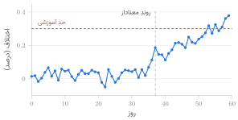
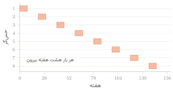
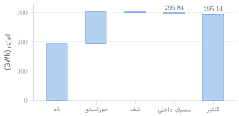
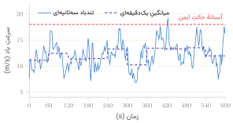
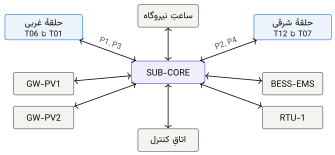
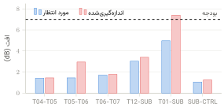
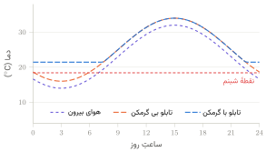
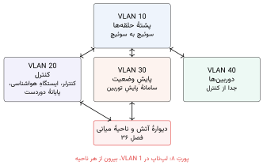
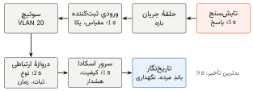

48 ساختِ ابزارِ دقیق، تجهیزاتِ اندازهگیری، تابلوی کنترل و سختافزارِ شبکه
48.1 نقشهٔ فصل
پس از این فصل، خواننده میتواند:
- معماریِ یک ابزار را از حسگر تا ورودیِ کنترلر بشناسد و برگهٔ دادهٔ آن را به بودجهٔ خطا در شرایطِ ساختگاه تبدیل کند.
- گواهیِ واسنجی را برای آنچه ثابت میکند بخوانَد: اعتباردهی، ردیابی، عدمِ قطعیت، بیانیهٔ انطباق و تاریخ؛ و زنجیرهٔ کنتورِ فروش را با آزمونِ ساختگاهِ آن بسنجد.
- تابلوها را برای جای کارشان بسنجد: کدِ حفاظتِ پوسته، دما، سازگاریِ الکترومغناطیسی، برقگیرِ ضربه، همبندی و زمینکردنِ شیلد.
- ساختِ شبکه را با سابقههایش بپذیرد: جدولِ پورتها، هستهٔ فیبرها، افتِ پیوندهای فیبر و مس، دو منبعِ تغذیه.
- پیکربندی را کنترل کند: میانافزار در برابرِ خطمبنا، نسخهٔ پشتیبان پس از هر تغییر، انحرافِ ساعتها، نقشهٔ ثبّاتها در برابرِ پایگاهِ برچسبها و آزمونهای جابهجایی به پشتیبان.
- با پایتون پایگاهِ برچسبها را وارسی کند، جدولِ اتصالهای طرح و ساخت را مقایسه کند و سه نما بسازد: فیزیکی، منطقی و از حسگر تا تاریخنگار.
- همهٔ اینها را با مدیریتِ تدافعی انجام دهد: سابقهها خوانده میشوند، شبکه کاویده نمیشود.
پیشنیازها: ابزارِ دقیق و کنترل (فصل 34)، اسکادا و ارتباطات (فصل 35) و سامانهٔ تولید و کیفیت (فصل 40).
- خطای \(\pm1.5\,\%\) یک تابشسنج در 45 °C و دو سال پس از واسنجی همان \(\pm1.5\,\%\) است؟
- گواهیِ واسنجی بیعدمِ قطعیت چه کم دارد؟
- چرا دو منبعِ تغذیهٔ یک تابلو باید از دو منبع بیایند؟
- چرا ساعتِ همهٔ دستگاهها باید از یک منبع باشد؟
پاسخها: (۱) نه، ضریبِ دمایی و رانش به آن افزوده میشوند؛ (۲) بی آن، عدد را نمیشود با حد مقایسه کرد؛ (۳) تا خرابیِ یک منبع هر دو را خاموش نکند؛ (۴) تا ترتیبِ رویدادها درست خوانده شود. اگر دو پرسش یا بیشتر را نتوانستید، بخش 34.2.4، بخش 34.2.9، بخش 34.6.5 و بخش 35.2.9 را مرور کنید.
جایگاهِ این فصل در نیروگاهِ P. فصلهای ۳۴ تا ۳۶ ابزارها، کنترلرها، شبکه و ناحیههای امنیتیِ نیروگاه را طراحی کردند: ایستگاههای هواشناسی، حسگرهای توربینها، کنتورهای نقطهٔ اتصال، پایانهٔ دوردست، حلقههای فیبرِ توربینها و سوئیچِ اصلیِ پست. این فصل همان سختافزار را به سه سازندهٔ ساختگی میبرد: سازندهٔ ابزار، سازندهٔ تابلو و یکپارچهسازِ شبکه (A-498 تا A-505). فصلهای ۳۴ و ۳۵ مقیاسبندی، بودجهٔ فیبر، همگامسازی و فهرستِ نقطهها را آموختند و فصلِ ۴۶ سیمکشیِ تابلو را. این فصل یک گام جلوتر به سابقههای سختافزار میرود: برگهٔ داده در شرایطِ ساختگاه، گواهیِ واسنجی، پروندههای آزمونِ فیبر و مس، جدولِ پورتها و نسخههای پشتیبان. همه با تصمیمِ D-052 جمع میشوند.
سازندهها، دادهها و عیبها ساختگیاند و حدها آموزشی. همهٔ کارِ شبکه در این فصل تدافعی است: برنامهها پروندههایی را میخوانند که یکپارچهساز تحویل میدهد. هیچ پویشی، آزمونِ نفوذی یا دورزدنی آموزش داده نمیشود (فصل 36). کار روی تابلوها و مدارهای برقدار، و واسنجی در ساختگاه، به دستِ افرادِ صلاحیتدار و با سامانهٔ مجوزِ کار انجام میشود (بخش 32.2.4).
48.2 الف. سختافزارِ اندازهگیری و کنترل
48.2.1 از حسگر تا ورودیِ کنترلر
ایده. هر ابزار زنجیرهای است: حسگر کمیتِ فیزیکی را به یک اثرِ الکتریکی تبدیل میکند، مبدلِ اندازهگیری آن را به سیگنالی استاندارد میبرد، آمادهسازِ سیگنال آن را جدا، صافی و تقویت میکند، ورودیِ کنترلر آن را نمونهبرداری و رقمی میکند، و پردازنده آن را با مقیاس و یکا به یک مقدار تبدیل میکند. منبعِ تغذیه، پوسته، اتصالدهنده و سیمکشی هر کدام بخشی از دقت و عمرِ همان زنجیرهاند. فصلِ ۳۴ هر حلقه را جدا آموخت (بخش 34.2.1، بخش 34.2.3). اینجا هر حلقه یک سابقه در کارخانه یا ساختگاه دارد.
| حلقه | کار | سابقهٔ پذیرش |
|---|---|---|
| حسگر | تبدیلِ کمیتِ فیزیکی | برگهٔ داده، گواهیِ واسنجی |
| مبدلِ اندازهگیری | سیگنالِ استاندارد، مثلاً 4–20 mA | گواهیِ واسنجی، بازه |
| آمادهسازِ سیگنال | جداسازی، صافی | پیکربندی، آزمونِ حلقه |
| ورودیِ کنترلر | نمونهبرداری، رقمیسازی | پیکربندیِ کارت، وارسیِ حلقه |
| پردازنده و میانافزار | مقیاس، یکا، کیفیت | خطمبنای میانافزار، نسخهٔ پشتیبان |
| منبعِ تغذیه | انرژیِ زنجیره | بارِ منبع، دو منبع |
| پوسته | محیط، گرد، آب، گرما | کدِ حفاظتِ پوسته، دمای درون |
| اتصالدهنده و سیم | پیوستگی، شیلد | سیمکشی، همبندی، زمینِ شیلد |
سیگنالِ 4–20 mA مقدارِ \(x\) را در بازهٔ \([x_\text{lo}, x_\text{hi}]\) چنین میبرد:
\[ I = 4 + 16\,\frac{x - x_\text{lo}}{x_\text{hi} - x_\text{lo}}\quad \text{mA} \tag{48.1}\]
48.2.2 برگهٔ داده در شرایطِ ساختگاه
ایده. برگهٔ داده دقت را در دمای مرجع و روزِ واسنجی میدهد. در ساختگاه چند جملهٔ دیگر هم هست: ضریبِ دمایی ضربدر فاصله از دمای مرجع، رانش ضربدر سالهای پس از واسنجی، و خطیبودن. جمعِ تصادفیِ آنها با ریشهٔ مجموعِ مربعها:
\[ u = \sqrt{u_\text{acc}^2 + u_\text{T}^2 + u_\text{drift}^2 + u_\text{lin}^2} \tag{48.2}\]
def error_budget(spec: dict, t_site: float, years: float, reading: float,
full_scale: float) -> dict:
"""Combine a datasheet's error terms at site conditions, in units of
the measurand: accuracy (% of reading and % of full scale), temperature
coefficient (% of reading per K from the reference temperature),
drift (% of reading a year) and non-linearity (% of full scale)."""
terms = {
"accuracy": reading * spec.get("acc_rdg", 0) / 100
+ full_scale * spec.get("acc_fs", 0) / 100,
"temperature": reading * spec.get("tc_rdg", 0) / 100
* abs(t_site - spec.get("t_ref", 20.0)),
"drift": reading * spec.get("drift_rdg_yr", 0) / 100 * years,
"linearity": full_scale * spec.get("nl_fs", 0) / 100,
}
rss = math.sqrt(sum(v * v for v in terms.values()))
return dict(terms=terms, rss=rss, worst=sum(terms.values()))datasheet error terms at site: 45 C, 2 years after calibration
instrument reading RSS worst largest term
pyranometer 1000 W/m2 21.00 39.00 accuracy
reference cell 1000 W/m2 24.13 39.50 accuracy
cup anemometer 10 m/s 0.26 0.43 accuracy
power transducer 100 MW 0.31 0.57 accuracy
Pt100 + transmitter 45 C 0.11 0.15 accuracy
pyranometer terms, W/m2: accuracy 15, temperature 10, drift 10, linearity 4
its 21 W/m2 RSS is 2.1 % of the reading; the accuracy in
bold is 15, and the terms the datasheet prints in small type add 15
- temperature (reference 20 C) and two years of drift; the
recalibration interval is part of the budget (ch 34)مثال 48.1 (دقتِ درشتنوشته نصفِ ماجراست) پرسش. خطای تابشسنج در 1000 W/m²، 45 °C و دو سال پس از واسنجی چقدر است؟
پاسخ. دقت 15، دما \(0.04\,\% \times 25 \times 1000 = 10\)، رانش \(0.5\,\% \times 2 \times 1000 = 10\) و خطیبودن 4 W/m². ریشهٔ مجموعِ مربعها 21.0 W/m²، یعنی 2.1 %.
تفسیر. دقتِ درشتنوشته 15 است و جملههای ریز بهاندازهٔ خودش اضافه میکنند. این همان عدمِ قطعیتی است که در نسبتِ عملکردِ فصلِ ۳۷ میآید (فصل 37). دمای مرجع و سالهای پس از واسنجی بخشی از بودجهاند.
48.2.3 بازهٔ واسنجی از رانش
ایده. رانش هر سال بودجه را بزرگتر میکند. بازهٔ واسنجی جایی است که بودجه به حدِ مجازِ نیروگاه میرسد، نه پیشفرضِ سازنده.
pyranometer: years until the RSS budget at 45 C reaches 2.5 % of the reading
the budget passes 2.5 % after about 3.4 years
so the recalibration interval is set by the drift the plant
can afford, not by the maker's default of two years; the
reference cell and the spare pyranometer swap in so the
station never stops measuring (ch 12, ch 34)مثال 48.2 (سهونیم سال، نه دو) پرسش. با حدِ 2.5 %، تابشسنج کِی باید دوباره واسنجی شود؟
پاسخ. حدودِ 3.4 سال پس از واسنجی، بودجه از 2.5 % میگذرد.
تفسیر. بازه را رانشی تعیین میکند که نیروگاه میتواند بپذیرد. سلولِ مرجع و تابشسنجِ یدک جای آن را میگیرند تا ایستگاه هرگز از اندازهگیری نماند (فصلهای ۱۲ و ۳۴).
48.2.4 گواهیِ واسنجی برای آنچه ثابت میکند
ایده. گواهیِ واسنجی پنج چیز را ثابت میکند یا نمیکند: آزمایشگاه اعتباردهی شده است، عدد تا یک مرجعِ ملی ردیابی میشود، عدمِ قطعیت آمده است، بیانیهٔ انطباق با مشخصه هست، و تاریخِ واسنجی بعدی نگذشته است. فصلِ ۳۴ سنجشِ پیش و پس از تنظیم را دید (بخش 34.2.15).
calibration certificates read on 2027-06-01 for what they prove
serial instrument finding
PY-1031 pyranometer ok
PY-1032 pyranometer no uncertainty stated
RC-2204 reference cell lab not accredited
AN-5510 cup anemometer overdue since 2026-04-02
PT-0718 power transducer no traceability chain
TT-3301 Pt100 + transmitter no conformity statement
5 of 6 certificates do not prove what they claim:
a number without its uncertainty cannot be compared with a
limit; without a traceability chain it is a number from an
unknown reference; an overdue anemometer has measured a year
of the plant's wind without a valid calibration (ch 13)مثال 48.3 (پنج گواهی از شش) پرسش. چه چیزی در هر گواهی کم است؟
پاسخ. PY-1032 عدمِ قطعیت ندارد. آزمایشگاهِ RC-2204 اعتباردهی نشده است. AN-5510 از 2026-04-02 گذشته است. PT-0718 زنجیرهٔ ردیابی ندارد. TT-3301 بیانیهٔ انطباق ندارد.
تفسیر. عددِ بیعدمِ قطعیت با حد مقایسهپذیر نیست. عددِ بیردیابی از مرجعی ناشناخته میآید. بادسنجِ گذشته از موعد یک سالِ باد را بیواسنجیِ معتبر اندازه گرفته است، و آن داده در برآوردِ انرژیِ فصلِ ۱۳ به کار میرود.
48.2.5 زنجیرهٔ کنتورِ فروش
ایده. کنتورِ فروش در نقطهٔ اتصال از سه حلقه ساخته شده است: ترانسفورماتورِ جریان، ترانسفورماتورِ ولتاژ و کنتور. هر کدام کلاسِ دقت دارد. خطای ترکیبیِ آموزشی:
\[ \varepsilon_\text{RSS} = \sqrt{\varepsilon_\text{CT}^2 + \varepsilon_\text{VT}^2 + \varepsilon_\text{m}^2}, \qquad \varepsilon_\text{worst} = \varepsilon_\text{CT} + \varepsilon_\text{VT} + \varepsilon_\text{m} \tag{48.3}\]
revenue metering at the POC: CT 0.2 %, VT 0.2 %, meter 0.2 % (class errors)
combined: RSS 0.35 %, worst case 0.60 %
site test of the meter (error at a share of rated load):
5 % +0.46 % limit 0.4 % OVER
20 % +0.18 % limit 0.2 % ok
100 % +0.12 % limit 0.2 % ok
at 5 % load the meter is outside its class: the plant
exports at low load for hours every morning and evening - the
0.35 % chain error on 295 GWh is about 1.0 GWh a year;
the meter's own test record belongs to the settlement
dossier, witnessed by the grid operator (ch 34, ch 37)what the metering chain's error is worth (teaching price 70 u/MWh)
0.35 % of 295 GWh = 1,022 MWh = 72 k u a year either way
worst case 0.60 %: 124 k u a year
the meter, its transformers and their site test are paid for
many times over in the first year: settlement disputes are
settled by the test record, not by the meter's nameplateمثال 48.4 (بارِ کم، خطای بیرون از کلاس) پرسش. کنتور در کدام بار از کلاسش بیرون است؟ خطای زنجیره سالانه چقدر میارزد؟
پاسخ. در 5 % بار، +0.46 % در برابرِ 0.4 %. خطای ترکیبیِ 0.35 % روی 295 GWh یعنی 1022 MWh و با 70 واحد بر مگاواتساعت حدودِ 72 هزار واحد در سال.
تفسیر. نیروگاه هر صبح و عصر ساعتها با بارِ کم صادر میکند. سابقهٔ آزمونِ خودِ کنتور، که بهرهبردارِ شبکه شاهدِ آن است، به پروندهٔ تسویه میرود (فصلهای ۳۴ و ۳۷). اختلافِ تسویه را سابقهٔ آزمون حل میکند، نه پلاکِ کنتور.
48.2.6 پوسته، دما و جای کار
ایده. هر تابلو برای جای کارش انتخاب میشود. کدِ حفاظتِ پوسته دو رقم دارد: رقمِ اول نفوذِ گرد و رقمِ دوم نفوذِ آب را نشان میدهد. دمای درونِ تابلو در روزِ تابستان باید زیرِ حدِ هر دستگاهِ درون بماند. فصلِ ۳۴ گرمای تابلو را حساب کرد (بخش 34.4.2، بخش 34.4.14).
cabinets on a summer day: inside temperature against each device's
rating
cabinet IP inside C devices over their rating
MET-1 IP55 52 modem
WTG-T05 IP54 48 -
SUB-RTU IP42 41 -
PV-B07 IP65 58 datalogger, switch
(teaching rule: a device keeps 5 K below its rating)
the PV block cabinet in full sun is the worst; a device run
near its limit ages fast (ch 34 life in a hot cabinet) - the
choice is a sun shield, a cooler or a device rated higher,
and the IP rating keeps dust out but also heat inenclosure rating against its location (IP: first digit dust,
second water; teaching minimum by location)
cabinet location need installed verdict
MET-1 outdoor IP54 IP55 ok
WTG-T05 turbine tower IP54 IP54 ok
SUB-RTU indoor, clean IP20 IP42 ok
PV-B07 outdoor, dust IP55 IP65 ok
PV-B03 outdoor, dust IP55 IP54 LOW
CAM-12 outdoor IP54 IP44 LOW
low: PV-B03, CAM-12 - PV-B03 has the dust digit but not the
water one for a block washed by the cleaning robots of ch 10;
CAM-12's camera box lets in the dust of the access road; the
rating is read from the nameplate, not the orderمثال 48.5 (پوستهای که گرما را هم نگه میدارد) پرسش. کدام تابلوها دستگاهی دارند که نزدیکِ حدِ دمایش کار میکند؟ کدام پوسته برای جایش کم است؟
پاسخ. PV-B07 با 58 °C و MET-1 با 52 °C. پوستههای PV-B03 و CAM-12 کماند.
تفسیر. پوستهٔ IP65 گرد را بیرون نگه میدارد ولی گرما را هم درون. سایهبان، خنککن یا دستگاهی با ردهٔ دمایی بالاتر راهحلاند. PV-B03 رقمِ آب را برای بلوکی که رباتهای پاککنِ فصلِ ۱۰ آن را میشویند ندارد. رده از پلاک خوانده میشود، نه از سفارش.
48.2.7 سازگاریِ الکترومغناطیسی و برقگیرِ ضربه
ایده. دستگاه باید در میدانها و ضربههای جای کارش کار کند. پست میدانها و ضربههای کلیدزنی دارد که دفتر هرگز نمیبیند. گزارشِ آزمونِ سازگاریِ الکترومغناطیسی نشان میدهد دستگاه برای کدام رده آزموده شده است. خطِ سیگنالی که از بیرون میآید، برقگیرِ ضربه در ورودیِ تابلو میخواهد.
EMC immunity reports against the place each device works
RTU-1 substation tested 'heavy industrial', needs 'substation'
SW-SUB substation ok
GW-PV1 substation tested 'light industrial', needs 'substation'
CLK-1 substation NO REPORT
SW-T05 turbine ok
short: RTU-1, GW-PV1, CLK-1
a substation has switching surges and fields an office never
sees: a gateway tested for light industry may reset when a
breaker opens - exactly when its data matter; the report
is asked for before the order (ch 39), not after a resetoutdoor signal lines entering cabinets: surge protector at the entry?
C-201 met mast pyranometer -> MET-1 yes
C-202 met mast anemometer -> MET-1 yes
C-203 met mast wind vane -> MET-1 NO
C-204 PV string monitor -> PV-B07 yes
C-205 fence camera -> CAM-12 NO
2 lines without: the wind vane's cable runs down the same
mast as the others and brings a lightning surge straight to
the logger the others protect - a protector on every line,
bonded to the cabinet's earth bar (lesson A), or none worksمثال 48.6 (دروازهای که هنگامِ قطع خاموش میشود) پرسش. کدام دستگاهها گزارشِ کافی ندارند؟ کدام خطها برقگیر ندارند؟
پاسخ. RTU-1 و GW-PV1 برای ردهای پایینتر از پست آزموده شدهاند و CLK-1 گزارش ندارد. خطِ بادنمای دکل و خطِ دوربینِ حصار برقگیر ندارند.
تفسیر. دروازهای که برای صنعتِ سبک آزموده شده، ممکن است درست وقتی کلید باز میشود دوباره راهاندازی شود، یعنی درست وقتی دادهاش مهم است. کابلِ بادنما از همان دکلی پایین میآید که بقیه، و ضربهٔ آذرخش را به همان ثبتکنندهای میرساند که بقیه از آن محافظت میکنند. گزارش پیش از سفارش خواسته میشود (فصلِ ۳۹).
48.2.8 همبندی و زمینکردنِ شیلد
ایده. هر تابلو با مقاومتی کم به شینهٔ زمین همبند میشود. شیلدِ هر کابل با قاعدهٔ گونهٔ آن زمین میشود: کابلِ آنالوگ در یک سر، اترنتِ مسی در دو سر. فصلِ ۳۴ زمینکردنِ سیگنال را دید (بخش 34.2.11).
cabinet bonding to the earth bar (teaching limit 0.1 ohm) and cable shields
MET-1 0.04 ohm ok
WTG-T05 0.06 ohm ok
SUB-RTU 0.21 ohm HIGH
PV-B07 0.05 ohm ok
shields against the project's rule by cable kind:
C-102 (analogue 4-20 mA): earthed at both ends, rule one end
C-106 (Pt100): earthed at none, rule one end
a high bond lets a fault or surge raise the cabinet against
earth; an analogue shield earthed at both ends carries a loop
current that the 4-20 mA signal reads as noise; an unearthed
Pt100 shield screens nothing - each is a line in the
cabinet's test record, found before the first readingمثال 48.7 (شیلدی که سیگنال را نویزی میکند) پرسش. کدام یافتهها در همبندی و شیلدها هست؟
پاسخ. همبندیِ SUB-RTU 0.21 Ω است، بالای حدِ آموزشیِ 0.1 Ω. شیلدِ C-102، کابلِ آنالوگ، در دو سر زمین شده است. شیلدِ C-106، کابلِ Pt100، هیچجا زمین نشده است.
تفسیر. همبندیِ بالا یعنی خطا یا ضربه پتانسیلِ تابلو را نسبت به زمین بالا میبرد. شیلدی که در دو سر زمین شده، جریانی حلقوی میبرد که سیگنالِ 4–20 mA آن را نویز میخوانَد. شیلدِ زمیننشده چیزی را پوشش نمیدهد. همهٔ اینها سطرهای سابقهٔ آزمونِ تابلو هستند، پیش از نخستین خوانش.
48.2.9 خطاهای رایج
- خواندنِ دقتِ درشتنوشتهٔ برگهٔ داده بهجای بودجهٔ ساختگاه (مثال 48.1).
- پذیرشِ گواهیِ واسنجی با «قبول»، بیعدمِ قطعیت و ردیابی (مثال 48.3).
- آزمودنِ کنتور فقط در بارِ کامل (مثال 48.4).
- انتخابِ پوسته بیدیدنِ دمای درون یا آبِ شستوشو (مثال 48.5).
- برقگیر روی بعضی از خطهای یک دکل (مثال 48.6).
- زمینکردنِ شیلدِ آنالوگ در دو سر (مثال 48.7).
48.2.10 واسنجیِ بادسنج و برآوردِ انرژی
ایده. بادسنجِ فنجانی در تونلِ باد واسنجی میشود و یک تابعِ انتقال میگیرد: سرعتِ واقعی برابرِ شیب ضربدر خوانش بهاضافهٔ یک عرض از مبدأ (فصل 13). اگر دکل با تابعِ پیشفرضِ گونه کار کند، سوگیری مستقیم به برآوردِ انرژی میرسد. حساسیتِ انرژی به سرعت در فصلِ ۱۶ حدودِ 1.82 بود.
cup anemometer: tunnel calibration true = 1.012 x reading + 0.08 m/s,
against the maker's default (true = reading)
at the mast's mean 7.4 m/s the default under-reads by 2.3%
with ch 16's energy sensitivity of 1.82, the farm's energy is
underestimated by about 4.2% - a calibration that
moves the P50 by 4% is worth its certificate; the
individual calibration, not the type's default, goes into ch 13مثال 48.8 (چهار درصد از یک گواهی) پرسش. در میانگینِ 7.4 m/s تابعِ پیشفرض چقدر کم میخوانَد و انرژی چقدر کم برآورد میشود؟
پاسخ. \(1.012 \times 7.4 + 0.08 = 7.57\,\text{m/s}\)، یعنی 2.3 % کمخوانی. با حساسیتِ 1.82 حدودِ 4.2 % انرژیِ کمتر.
تفسیر. گواهیای که برآوردِ میانه را چهار درصد جابهجا میکند، ارزشِ خودش را دارد. واسنجیِ تکتکِ بادسنجها، نه پیشفرضِ گونه، به دادههای فصلِ ۱۳ میرود. یک گواهیِ گذشته از موعد (مثال 48.3) همین سوگیری را بیسابقه رها میکند.
48.2.11 کنتورِ اصلی و کنتورِ وارسی
ایده. در نقطهٔ اتصال دو کنتور هست: اصلی و وارسی. اختلافِ روزانهٔ آنها نوفهای کوچک دارد. اگر یکی رانش کند، اختلاف روند پیدا میکند. شیب با خطای معیارش (معادلهٔ 46.8) روند را پیش از رسیدن به حد نشان میدهد.
main against check meter at the POC: daily difference in %
(60 days, synthetic)
days 0-29: slope -0.0000 % a day (no trend)
days 30-59: slope +0.0112 +/- 0.0012 % a day
the trend is significant by day 37; the difference first
passes 0.3 % on day 53
the trend shows a meter drifting weeks before the limit is
crossed; which meter drifts is found by the site test of
both - the check meter exists to make this comparison
مثال 48.9 (شانزده روز زودتر) پرسش. روند کِی معنادار میشود و اختلاف کِی از حد میگذرد؟
پاسخ. روند در روزِ ۳۷ معنادار است، یعنی شیب بزرگتر از دو برابرِ خطای معیار. اختلاف در روزِ ۵۳ از 0.3 % میگذرد.
تفسیر. روند شانزده روز پیش از حد هشدار میدهد. اینکه کدام کنتور رانش دارد را آزمونِ ساختگاهیِ هر دو تعیین میکند. کنتورِ وارسی برای همین مقایسه آنجاست.
48.2.12 جداسازیِ حلقهها میانِ دو سامانهٔ زمین
ایده. حلقهٔ 4–20 mA گاهی از یک سامانهٔ زمین به سامانهٔ دیگری میرود: از تابلوی یک بلوکِ فتوولتائیک تا پایانهٔ دوردستِ پست. در خطای زمین، دو زمین برای لحظهای صدها ولت با هم فرق دارند (بخش 26.4.5). جداسازِ گالوانیک در مرز این ولتاژ را از کارتِ ورودی دور نگه میدارد.
4-20 mA loops that cross from one earthing system to another
L-101 met mast -> MET-1 crosses: no isolator: no
L-102 MET-1 -> SUB-RTU crosses: yes isolator: yes
L-103 WTG-T05 tower -> WTG-T05 base crosses: no isolator: no
L-104 PV-B07 -> SUB-RTU crosses: yes isolator: no
L-105 BESS-C3 -> SUB-RTU crosses: yes isolator: yes
crossing without an isolator: L-104
in an earth fault the two earths can differ by hundreds of
volts for a moment: the loop carries it into the RTU's input
card - an isolator at the boundary, recorded in the loop
schedule (ch 26 earth potential rise, ch 34 earthing)مثال 48.10 (حلقهای که ولتاژِ زمین را میبرد) پرسش. کدام حلقه بیجداساز از مرز میگذرد؟
پاسخ. L-104 از PV-B07 تا SUB-RTU.
تفسیر. در خطای زمینِ نزدیکِ پست، این حلقه اختلافِ پتانسیل را به کارتِ ورودیِ پایانه میبرد. جداساز در مرز و ثبتِ آن در جدولِ حلقهها راهحل است.
48.2.13 بازهٔ واسنجی در گردش
ایده. وقتی یک حسگر به واسنجی میرود، یدکی جایش را میگیرد. شمارِ یدک از سهمِ زمانی میآید که هر حسگر بیرون است.
8 irradiance sensors on a 3-year calibration interval, 8 weeks away each time
share of the time one sensor is away: 5.1%; expected away at once: 0.41
spares: ceil(8 x 0.051) + 1 = 2 (one for a failure)
staggered, one sensor leaves every 19.5 weeks and a spare takes its place
- the stations never stop measuring, and each swap is a line
in the instrument's record (lesson A interval)
مثال 48.11 (دو یدک برای هشت حسگر) پرسش. چند یدک لازم است؟
پاسخ. سهمِ بیرونبودن \(8/(52 \times 3) = 5.1\,\%\) و انتظارِ همزمان 0.41 حسگر. یک یدک برای گردش و یکی برای خرابی: دو.
تفسیر. با جابهجاییِ پلهپله، هر 19.5 هفته یک حسگر میرود و یدکی جایش را میگیرد. ایستگاهها هرگز از اندازهگیری نمیمانند و هر جابهجایی یک سطر در سابقهٔ ابزار است.
48.2.14 سوگیریِ تابشسنج و آزمونِ ضمانت
ایده. نسبتِ عملکرد بر تابشِ اندازهگیریشده تقسیم میشود (فصل 37). حسگری که زیاد میخوانَد، نسبتِ عملکرد را کم نشان میدهد.
a biased plane-of-array sensor and the PR test (true PR 0.82, guarantee 0.81)
sensor bias reported PR guarantee
-2% 0.837 met
-1% 0.828 met
+0% 0.820 met
+1% 0.812 met
+2% 0.804 MISSED
the PR divides by the measured irradiance: a sensor reading
2 % high takes 1.6 points off the PR and fails a plant that
meets its guarantee - a guarantee test is
only as good as its sensor's certificate, which is why the
test protocol names the sensors and their calibrations (ch 37)مثال 48.12 (نیروگاهی که ضمانت را دارد و رد میشود) پرسش. با نسبتِ واقعیِ 0.82 و ضمانتِ 0.81، کدام سوگیری آزمون را رد میکند؟
پاسخ. +2 %: \(0.82/1.02 = 0.804\)، یعنی 1.6 امتیاز کمتر و زیرِ ضمانت.
تفسیر. آزمونِ ضمانت فقط بهاندازهٔ گواهیِ حسگرش خوب است. پروتکلِ آزمون حسگرها و واسنجیهایشان را نام میبرد و همین بودجه را در عدمِ قطعیتِ نتیجه میآورد (فصلِ ۳۷).
48.2.15 ساعتهای تابستانِ یک تابلو
ایده. بخشِ «الف» یک عدد داد: دمای درونِ تابلو در یک روزِ تابستان. اینجا همان تابلو در کلِ تابستان دیده میشود: چند ساعت نزدیک یا بالای حدِ دستگاه است.
PV block cabinet over a summer (synthetic hourly temperatures):
hours inside above 50 C (rating 55 C less 5 K): 411
hours above the rating itself: 50
peak inside 60 C at mid-afternoon (lesson A's summer day: 58 C)
about 4.5 hours of an average summer day near or over
its rating: a sun shield (up to 12 K of solar gain) or a
device rated higher - lesson A's single number hid how many
hours it lastsمثال 48.13 (چهار ساعت و نیم هر روز) پرسش. دستگاه چند ساعت در تابستان نزدیک یا بالای حدش کار میکند؟
پاسخ. 411 ساعت بالای 50 °C، حدودِ چهار ساعت و نیم در روز، و 50 ساعت بالای خودِ حدِ 55 °C.
تفسیر. عددِ یک روز نشان نمیداد این شرایط چند ساعت طول میکشد. فرسودگی با ساعتها جمع میشود (بخش 34.4.14). سایهبان سهمِ تابش را برمیدارد.
48.2.16 همراستاییِ حسگرِ صفحهٔ آرایه
ایده. حسگرِ تابشِ صفحهٔ آرایه باید همشیبِ ماژولها نصب شود. اگر \(\delta\) درجه کج باشد، در بدترین حالت، یعنی وقتی کجی در صفحهٔ تابش است، پرتوِ مستقیم با زاویهٔ تابشِ \(\theta\) بهجای \(\cos\theta\) با \(\cos(\theta - \delta)\) دیده میشود. خطای نسبی (یک سادهسازیِ آموزشی که سهمِ پخشیده را کنار میگذارد):
\[ e(\theta) = \frac{\cos(\theta - \delta)}{\cos\theta} - 1 \tag{48.4}\]
plane-of-array sensor mounted 2 deg off the module plane:
error in the direct beam by angle of incidence (teaching)
incidence deg error %
10 +0.6
30 +2.0
50 +4.1
70 +9.5
near noon the error is small; in the morning and evening,
at large angles, it grows to several per cent - a sensor
is levelled to the module plane with a recorded
inclinometer reading, and checked again after the first stormمثال 48.14 (نزدیکِ ظهر کم، صبح و عصر زیاد) پرسش. با کجیِ 2°، خطا در زاویهٔ تابشِ 50° و 70° چقدر است؟
پاسخ. \(\cos 48^\circ/\cos 50^\circ - 1 = +4.1\,\%\) و در 70° +9.5 %.
تفسیر. خطا با زاویه بزرگ میشود، پس ساعتهای صبح و عصر را بیشتر جابهجا میکند. حسگر با شیبسنج به صفحهٔ ماژول تراز میشود، عددِ شیبسنج ثبت میشود و پس از نخستین طوفان دوباره سنجیده میشود.
48.2.17 زنجیرهٔ ردیابیِ واسنجی
ایده. عدمِ قطعیتِ واسنجی از سه پله جمع میشود: مرجعِ ملی، استانداردِ آزمایشگاهِ اعتباردهیشده و انتقال به خودِ ابزار. ریشهٔ مجموعِ مربعها با ضریبِ پوششِ \(k = 2\) عدمِ قطعیتِ گسترده را میدهد. نسبتِ رواداریِ ابزار به این عدد همان نسبتی است که فصلِ ۴۰ برای وسیلهٔ اندازهگیری خواست.
traceability chain of a pyranometer's calibration (teaching values)
level adds u % chain u %
national reference 0.10 0.10
accredited laboratory standard 0.25 0.27
laboratory transfer to the instrument 0.45 0.52
expanded (k = 2): 1.05 %; the instrument's tolerance +/-1.5 %
ratio tolerance / uncertainty: 1.4 (ch 40 asks for 4)
the last step adds the most: a calibration whose own
uncertainty is two thirds of the tolerance cannot tell a
good sensor from a marginal one - the certificate's
uncertainty is read before its 'pass'مثال 48.15 (واسنجیای که خوب و مرزی را جدا نمیکند) پرسش. نسبتِ رواداری به عدمِ قطعیت چقدر است؟
پاسخ. \(u = \sqrt{0.10^2 + 0.25^2 + 0.45^2} = 0.52\,\%\)، گسترده 1.05 %. با رواداریِ 1.5 % نسبت 1.4 است، دور از 4.
تفسیر. پلهٔ آخر بیشترین سهم را دارد. واسنجیای که عدمِ قطعیتش دوسومِ رواداری است، حسگرِ خوب را از حسگرِ مرزی جدا نمیکند. عدمِ قطعیتِ گواهی پیش از «قبول»ش خوانده میشود (مثال 48.3).
48.2.18 آشتیدادنِ انرژی از کنتورها تا نقطهٔ اتصال
ایده. انرژیِ سالانهٔ نیروگاه را میشود از دو سو شمرد: جمعِ کنتورهای توربینها و مبدّلها منهای تلف و مصرفِ داخلیِ فصلِ ۱۵ (فصل 15)، و کنتورِ فروش. اختلافِ این دو با عدمِ قطعیتِ همهٔ کنتورها و مدلِ تلف سنجیده میشود.
the year's energy from the turbine and inverter meters to the POC
meter (GWh; ch 15 losses and own use)
turbines 194.11 + PV 108.36 - losses 3.29 - own use 2.34 = 296.84
revenue meter 295.14: gap 1.70 GWh (0.58%)
explained by the chain's uncertainty: +/-2.29 GWh (turbine meters
1 %, inverter meters 0.5 %, revenue chain 0.35 %, loss model 10 %)
the gap is inside what the meters can explain - not a finding;
the largest term is the turbine meters: if the monthly gap
grows past it, they are the first to be checked (ch 37)
مثال 48.16 (اختلافی که یافته نیست) پرسش. اختلاف چقدر است و آیا یافته است؟
پاسخ. \(194.11 + 108.36 - 3.29 - 2.34 = 296.84\) در برابرِ 295.14 GWh: 1.70 GWh، یعنی 0.58 %. عدمِ قطعیتِ زنجیره ±2.29 GWh است.
تفسیر. اختلاف درونِ آن چیزی است که کنتورها توضیح میدهند، پس یافته نیست. بزرگترین جمله کنتورهای توربیناند. اگر اختلافِ ماهانه از آن بزرگتر شود، آنها اول وارسی میشوند (فصلِ ۳۷). یک وارسی که «چیزی پیدا نکرد» هم یک نتیجه است.
48.2.19 تندباد یا میانگین: ورودیِ حالتِ ایمنِ ردیاب
ایده. ردیابِ فتوولتائیک در بادِ شدید به حالتِ ایمن میرود (بخش 47.2.4). کنترلگر باید تندبادِ سهثانیهای را ببیند، همان باری که گشتاورِ رانه با آن سنجیده شد. میانگینِ یکدقیقهایِ ثبتکننده آن را صاف میکند.
tracker stow on wind: trigger 18 m/s, ten minutes of 1-second wind (synthetic)
3-second gust above the trigger: 1 event, first at t = 421 s, peak 19.1 m/s
one-minute means: highest 13.5 m/s - never above the trigger
a controller that reads the logger's one-minute mean never
stows; the stow input is the gust the drive's torque was
checked against (ch 47 stow), and the averaging time is a
line in the instrument specification, tested at the FAT
مثال 48.17 (کنترلگری که هرگز ایمن نمیکند) پرسش. اگر کنترلگر میانگینِ یکدقیقهای را بخوانَد چه میشود؟
پاسخ. بیشترین میانگینِ یکدقیقهای 13.5 m/s است و هرگز به آستانهٔ 18 m/s نمیرسد. تندبادِ سهثانیهای در ثانیهٔ 421 از آن میگذرد و به 19.1 m/s میرسد.
تفسیر. زمانِ میانگینگیری یک سطر از مشخصاتِ ابزار است و در آزمونِ پذیرشِ کارخانه آزموده میشود. حسگرِ درست با میانگینِ نادرست همان حسگرِ نادرست است.
48.2.20 نیمرخِ بازهها و شمارندهٔ کنتور
ایده. کنتورِ فروش دو چیز میدهد: شمارندهٔ انرژی و نیمرخِ بازههای پانزدهدقیقهای. جمعِ نیمرخ باید با تفاضلِ شمارنده بخواند. بازههای گمشده اختلاف میسازند.
export meter, one month: 2976 quarter-hour intervals in the profile, 6 missing
register difference over the month: 24064.9 MWh
sum of the profile as received: 23999.0 MWh
gap: 65.9 MWh (0.27%) - the missing intervals' energy
the register is the energy, the profile its shape: the gap is
filled from the meter's own memory (re-read), not by
interpolation, and the six intervals are flagged in the
settlement file (ch 35 completeness)مثال 48.18 (شش بازه، شصتوشش مگاواتساعت) پرسش. اختلافِ نیمرخ و شمارنده چقدر است و چگونه پر میشود؟
پاسخ. 65.9 MWh، یعنی 0.27 % از ماه، انرژیِ شش بازهٔ گمشده.
تفسیر. شمارنده انرژی است و نیمرخ شکلِ آن. بازههای گمشده از حافظهٔ خودِ کنتور دوباره خوانده میشوند، نه با درونیابی، و در پروندهٔ تسویه نشاندار میشوند (بخش 35.4.17).
48.2.21 برچسبِ آغاز یا پایانِ بازه
ایده. انرژیِ هر بازه را میشود با زمانِ آغاز یا پایانِ بازه برچسب زد. تسویه یکی را میخواهد. پروندهای که دیگری را بفرستد، هر مقدار را یک بازه جابهجا میکند.
a day of quarter-hour export, labelled by interval END (settlement)
or by interval START (an exporter's default), price bands by hour
value with the right labels: 74,542 u
value with every interval one step late: 74,147 u (-395 u)
energy moved into the next day at midnight: 8.6 MWh
the error is small on a day and systematic over a year, and
every price change hour carries it; the label convention is
written in the metering specification and checked on the
first exported file, interval by intervalمثال 48.19 (چهارصد واحد در یک روز) پرسش. جابهجاییِ یکبازهای در این روز چه اثری دارد؟
پاسخ. ارزش 395 واحد کمتر و 8.6 MWh از واپسین بازه به روزِ بعد میرود.
تفسیر. خطا در یک روز کوچک است ولی در یک سال نظاممند است و در هر ساعتِ تغییرِ قیمت تکرار میشود. قراردادِ برچسب در مشخصاتِ اندازهگیری نوشته و روی نخستین پروندهٔ صادرشده بازه به بازه وارسی میشود.
48.2.22 خوانشِ پیش از تنظیم و دادههایی که زیرِ پرسش میروند
ایده. گواهیِ واسنجی دو عدد دارد: خوانشِ پیش از تنظیم (as found) و پس از تنظیم (as left)، همانگونه که فصلِ ۲ گفت (بخش 2.4.3). اگر خوانشِ پیش از تنظیم بیرون از رواداری باشد، دادههای پیشین زیرِ پرسش میروند. با فرضِ رانشِ خطی از صفر، روزی که حسگر از رواداری بیرون رفت برآورد میشود.
pyranometer PYR-2: as found 2.8 % high at its calibration on 2027-06-01,
tolerance 1.5 %
last calibration 2025-06-01 (730 days); assuming a linear drift from zero,
it left the tolerance on about 2026-06-27 (day 391)
data from 2026-06-27 to 2027-06-01: 339 days flagged;
mean error over them 2.15 %
the as-found reading is the most useful line of the
certificate: it says how long the data were wrong and which
reports used them (the monthly PR of ch 37); the as-left
value only says the sensor is right againمثال 48.20 (سیصدوسیونه روز داده) پرسش. از کِی دادههای PYR-2 نشاندار میشوند؟
پاسخ. \(1.5/2.8 \times 730 = 391\) روز پس از واسنجیِ پیشین، یعنی حدودِ 2026-06-27. از آن روز 339 روز داده با خطای میانگینِ 2.15 % نشاندار میشود.
تفسیر. خوانشِ پیش از تنظیم سودمندترین سطرِ گواهی است: میگوید دادهها چه مدت نادرست بودهاند و کدام گزارشها، مثلِ نسبتِ عملکردِ ماهانهٔ فصلِ ۳۷، از آنها استفاده کردهاند. خوانشِ پس از تنظیم فقط میگوید حسگر دوباره درست است. فرضِ رانشِ خطی خودش یک فرض است: حسگرِ دوم یا مقایسهٔ روزانه (مثال 48.9) آن را میآزماید.
48.2.23 پلمبهای اندازهگیریِ فروش
ایده. کنتورها، جعبههای ترانسفورماتورهای اندازهگیری و بلوکهای آزمون پلمب میشوند و شمارهٔ هر پلمب در یک دفتر ثبت میشود. بازرسیِ دورهای پلمبهای دیدهشده را با دفتر مقایسه میکند.
revenue metering seals at the quarterly inspection against the
seal register
M-01 main register S-40211 seen S-40211 ok
M-02 check register S-40212 seen S-40212 ok
CT box E1 register S-40213 seen S-40213 ok
VT box E1 register S-40214 seen S-40214 ok
test block M-01 register S-40215 seen S-40398 FINDING
test block M-02 register S-40216 seen none FINDING
a test block opened and resealed with an unregistered seal,
and one left unsealed: each is a record to close with the
person and the reason (a test, a fault), and the energy of
the open period is checked against the check meterمثال 48.21 (دو بلوکِ آزمون) پرسش. کدام پلمبها یافتهاند؟
پاسخ. بلوکِ آزمونِ M-01 با پلمبی که در دفتر نیست و بلوکِ آزمونِ M-02 بیپلمب.
تفسیر. هر یافته با نامِ شخص و دلیل، یک آزمون یا یک خرابی، بسته میشود. انرژیِ بازهٔ بازبودن با کنتورِ وارسی سنجیده میشود. پلمب بخشی از زنجیرهٔ شاهدِ اندازهگیری است، همانگونه که مهرِ گواهی بخشی از زنجیرهٔ واسنجی است.
48.2.24 ترانسفورماتورِ جریانِ وارونه در کنتورِ سهفاز
ایده. اگر یکی از سه ترانسفورماتورِ جریانِ کنتور وارونه وصل شود، توانِ آن فاز منفی خوانده میشود. کنتور بهجای جمعِ سه فاز، دو فاز منهای یکی را میشمارد.
three-phase export meter at 100 MW, pf 0.95; phase c CT reversed
phase P right MW P read MW
a 33.33 33.33
b 33.33 33.33
c 33.33 -33.33
total 100.00 33.33 (33% of the right value)
one reversed CT turns a third of the energy negative: the
meter reads a third of the export; the commissioning check
reads each phase's power and angle, at the first low load,
before a single interval is settledمثال 48.22 (یکسومِ صادرات) پرسش. با وارونگیِ فازِ c، کنتور در 100 MW چه میخوانَد؟
پاسخ. \(33.33 + 33.33 - 33.33 = 33.33\,\text{MW}\)، یعنی یکسومِ مقدارِ درست.
تفسیر. وارسیِ راهاندازی توان و زاویهٔ هر فاز را در نخستین بارِ کم میخوانَد، پیش از آنکه حتی یک بازه تسویه شود. کنتورِ وارسیِ بخشِ «الف» (مثال 48.9) همین را در نخستین روز نشان میداد، اگر سیمکشیِ خودش درست باشد. کارِ روی مدارهای ترانسفورماتورِ جریان فقط با روشِ کارِ ایمنِ مالکِ مدار و به دستِ افرادِ صلاحیتدار انجام میشود.
48.2.25 یک بادسنج یا دو بادسنج برای حالتِ ایمن
ایده. بادسنجِ حالتِ ایمن دو گونه خرابی دارد: کمخوانی که حالتِ ایمن را از دست میدهد، و پرخوانی که ردیفها را بیدلیل میخواباند. با آزمونِ دورهای در بازهٔ \(T\)، احتمالِ میانگینِ ناکامی برای یک حسگر حدودِ \(\lambda T/2\) است و برای «هر کدام از دو حسگر» حدودِ \((\lambda T)^2/3\)، اگر دو حسگر مستقل باشند (همان منطقِ لایههای حفاظتیِ فصلِ ۳۲).
tracker stow on wind: sensor failing low 0.1/yr, failing high 0.2/yr,
proof-tested every 1 year (teaching values)
scheme chance of no stow when needed spurious stows a year
one sensor 0.0500 0.20
either of two 0.0033 0.40
the second sensor cuts the chance of missing a stow 15-fold and
doubles the stows for nothing - a few hours of lost
energy against a row that meets a storm flat; common
causes (one mast, one cable, one icing event) are what
limits the gain, so the two sensors sit apartمثال 48.23 (پانزده برابر کمتر، دو برابر بیشتر) پرسش. حسگرِ دوم چه میدهد و چه میگیرد؟
پاسخ. احتمالِ ازدستدادنِ حالتِ ایمن از 0.05 به 0.0033 میرسد، پانزده برابر کمتر. خوابیدنهای بیدلیل از 0.2 به 0.4 در سال میرسد.
تفسیر. چند ساعت انرژیِ ازدسترفته در برابرِ ردیفی که با طوفان صاف روبهرو میشود. سودِ واقعی را علتهای مشترک محدود میکنند: یک دکل، یک کابل، یک یخزدگی. پس دو حسگر از هم دور نصب میشوند و این فاصله در نقشهٔ چونساخت ثبت میشود.
- حلقههای یک ابزار را از حسگر تا پردازنده نام ببرید.
- جدول 48.1 را توضیح دهید.
- معادلهٔ 48.1 را برای 600 W/m² در بازهٔ 0–1600 حساب کنید.
- معادلهٔ 48.2 را توضیح دهید.
- چرا بازهٔ واسنجی از رانش میآید؟
- پنج چیزی که گواهیِ واسنجی ثابت میکند را نام ببرید.
- معادلهٔ 48.3 را برای 0.2، 0.2 و 0.5 % حساب کنید.
- دو رقمِ کدِ حفاظتِ پوسته چه میگویند؟
- چرا دستگاهِ پست ردهٔ سازگاریِ الکترومغناطیسیِ ویژه میخواهد؟
- چرا هر خطِ بیرونی برقگیر میخواهد؟
- شیلدِ کابلِ آنالوگ کجا زمین میشود و چرا؟
48.3 ب. ساختِ تابلو و شبکه
48.3.1 نمای فیزیکی: تابلوها و پیوندها
ایده. شبکهٔ نیروگاه از چند تابلو و پیوند ساخته شده است: سوئیچِ اصلیِ پست، دو حلقهٔ فیبرِ توربینها، دروازههای ارتباطیِ بلوکهای فتوولتائیک، سامانهٔ مدیریتِ انرژیِ باتری، پایانهٔ دوردست، اتاقِ کنترل و ساعتِ اصلی (بخش 35.2.8). نمای فیزیکی نشان میدهد هر چیز در کدام تابلو و روی کدام پورت است.

ساختِ تابلوی شبکه. چیدمانِ تابلو جای سوئیچها، پنلِ اتصال، منبعهای تغذیه و مسیرِ کابلها را تعیین میکند. هر پورت و هر کابل یک برچسب دارد که با جدولِ پورتها میخواند. سیمکشی و آزمونِ نقطهبهنقطهٔ تابلو همان روشِ فصلِ ۴۶ است (بخش 46.4.3). آنچه اینجا تازه است، پروندههای شبکه است: پورتها، هستههای فیبر، آزمونِ پیوندها و منبعهای تغذیه.
48.3.2 جدولِ پورتها: طرح در برابرِ ساخت
ایده. جدولِ پورتها برای هر پورت سوئیچ میگوید به کجا وصل است، در کدام شبکهٔ مجازی (VLAN) و با چه سرعتی. پروندهٔ چونساختِ یکپارچهساز با جدولِ طرح پورت به پورت مقایسه میشود.
def diff_ports(planned: dict, actual: dict) -> dict:
"""planned/actual: (device, port) -> dict(far=..., vlan=..., speed=...).
Return missing, extra and changed connections."""
missing = sorted(set(planned) - set(actual))
extra = sorted(set(actual) - set(planned))
changed = []
for k in sorted(set(planned) & set(actual)):
for f in planned[k]:
if planned[k][f] != actual[k].get(f):
changed.append((k, f, planned[k][f], actual[k].get(f)))
return dict(missing=missing, extra=extra, changed=changed)switch SW-T05: port schedule as designed against the as-built file
missing: -
extra: SW-T05:8
changed: SW-T05:4 vlan 30 -> 20
changed: SW-T05:5 far T05-CCTV -> T05-MET
changed: SW-T05:5 vlan 40 -> 20
changed: SW-T05:6 far T05-MET -> T05-CCTV
changed: SW-T05:6 vlan 20 -> 40
ports 5 and 6 swapped: the met station sits in the CCTV
VLAN and the camera in the control VLAN; the CMS on port 4
joined the control VLAN; and port 8 carries a laptop in the
default VLAN - a service connection left in; each one breaks
a zone of ch 36 without changing a single cable's colour
- the as-built file is compared with the design, port by portمثال 48.24 (هیچ کابلی رنگش را عوض نکرد) پرسش. چه چیزی در سوئیچِ SW-T05 با طرح نمیخواند؟
پاسخ. پورتهای ۵ و ۶ جابهجا شدهاند: ایستگاهِ هواشناسی در شبکهٔ دوربینها و دوربین در شبکهٔ کنترل است. سامانهٔ پایشِ وضعیت روی پورتِ ۴ به شبکهٔ کنترل رفته است. پورتِ ۸ یک لپتاپ در شبکهٔ پیشفرض دارد، اتصالِ خدماتی که جا مانده است.
تفسیر. هر کدام یک ناحیهٔ فصلِ ۳۶ را میشکند، بی آنکه رنگِ هیچ کابلی عوض شود (بخش 36.3.1). لپتاپِ جامانده دقیقاً همان چیزی است که فصلِ ۳۶ از آن پرهیز میکرد (بخش 36.3.23). مقایسهٔ پروندهٔ چونساخت با طرح آن را بی هیچ کاوشی در شبکه پیدا میکند.
48.3.3 پورتهای یدک و هستههای فیبر
ایده. هر سوئیچ و هر کابلِ فیبر یدک دارد تا تغییرِ بعدی جا داشته باشد. جدولِ هستههای فیبر میگوید هر هسته به چه کاری میرود. هستهای که در جدول «یدک» است ولی در کار است، تلهای برای تعمیرِ بعدی است.
spare ports on each switch (teaching rule 20%)
SW-T05 8 ports, 7 used, 12% spare
SW-T09 8 ports, 6 used, 25% spare
SW-SUB 24 ports, 22 used, 8% spare
SW-PV1 16 ports, 11 used, 31% spare
SW-CTRL 24 ports, 15 used, 38% spare
below the rule: SW-T05, SW-SUB - the substation core has two
ports left for the whole plant's life; one more PV block or a
second historian means a new switch in a full cabinet
(spare terminals, ch 46)fibre core allocation of two cables against the plan
FO-W1: spare cores 2; differences: ring T01 uses 3, plan 2
FO-E1: spare cores 2; differences: none
FO-W1's ring uses a third core that the plan does not show:
a technician who takes 'spare' core 5 for a repair cuts the
ring - the core table is part of the as-built scheduleمثال 48.25 (هستهٔ «یدک» که حلقه را میبرد) پرسش. کدام سوئیچها کمیدکاند؟ کدام کابل هستهای بیرون از طرح دارد؟
پاسخ. SW-T05 با 12 % و SW-SUB با 8 %. در FO-W1 حلقه سه هسته به کار میبرد و طرح دو.
تفسیر. سوئیچِ اصلیِ پست برای همهٔ عمرِ نیروگاه دو پورت دارد. یک بلوکِ تازه یعنی سوئیچی تازه در تابلویی پر. تکنسینی که هستهٔ «یدک» را برای تعمیر بردارد، حلقه را قطع میکند. جدولِ هستهها بخشی از جدولِ چونساخت است.
48.3.4 افتِ پیوندهای فیبر
ایده. فصلِ ۳۵ بودجهٔ افتِ نوری را روی کاغذ حساب کرد (بخش 35.2.7). هر پیوند پس از نصب اندازهگیری میشود. افتِ مورد انتظار از طول، اتصالدهندهها و جوشها:
\[ A_\text{exp} = \alpha\,L + n_\text{c}\,A_\text{c} + n_\text{s}\,A_\text{s} \tag{48.5}\]
اندازهگیری با دو چیز سنجیده میشود: بودجه، و افتِ مورد انتظارِ خودِ پیوند. پیوندی که از بودجه میگذرد رد است. پیوندی که خیلی بالاتر از انتظارِ خودش است، مشکوک است.
fibre links: measured loss against the expected loss and the budget
(teaching: 0.35 dB/km, 0.5 dB a connector, 0.1 dB a splice;
budget 7.0 dB: ch 35's 10 dB optics less its 3 dB margin)
link km expected dB measured dB verdict
T04-T05 0.62 1.42 1.45 ok
T05-T06 0.71 1.45 2.95 suspect
T06-T07 0.88 1.71 1.78 ok
T12-SUB 4.10 3.03 3.40 ok
T01-SUB 6.20 4.97 7.40 fail
SUB-CTRL 0.15 1.05 1.25 ok
T05-T06 passes the budget but is 1.5 dB above its expected
loss: a dirty or damaged connector, cleaned and re-measured
before it becomes the ring's weak link; T01-SUB is over
the budget and 2.4 dB above its own expected loss: its
connectors and splices are re-made and measured again before
longer-reach optics are bought - the west ring was already
tight in ch 35's paper budget
مثال 48.26 (قبول، ولی مشکوک) پرسش. چرا T05-T06 با 2.95 dB زیرِ بودجه هم یافته است؟
پاسخ. انتظارش 1.45 dB است: \(0.71 \times 0.35 + 2 \times 0.5 + 2 \times 0.1\). اندازهگیری 1.5 dB بیشتر است.
تفسیر. یک اتصالدهندهٔ کثیف یا آسیبدیده این افت را میسازد. تمیز و دوباره اندازهگیری میشود، پیش از آنکه حلقهٔ ضعیفِ حلقه شود. T01-SUB از بودجه میگذرد و 2.4 dB بالاتر از انتظارِ خودش است. پیش از خریدِ نورافکنهای دوردستتر، اتصالدهندهها و جوشهایش دوباره ساخته و سنجیده میشوند.
48.3.5 گواهیِ پیوندهای مسی
ایده. پیوندِ مسیِ اترنت با یک آزمونگر گواهی میشود. گزارش برای هر پیوند «قبول» یا «رد» مینویسد. ولی آزمونگری که با حدِ نادرست تنظیم شده باشد، همیشه «قبول» مینویسد. پس پروندهٔ نتیجهها خوانده میشود، نه خلاصه.
copper links certified (teaching: permanent link <= 90 m, NEXT margin >= 0 dB)
link length m NEXT margin dB report our verdict
CTRL-01 42 6.2 pass ok
CTRL-02 67 3.1 pass ok
CTRL-03 96 1.1 pass FAIL
CTRL-04 55 -0.4 pass FAIL
CTRL-05 31 7.5 pass ok
the report says 'pass' for all; CTRL-03, CTRL-04 fail when the
numbers are read: one is too long, one has a negative margin
- a tester set to the wrong limit prints 'pass'; the
results file, not the summary, is acceptedمثال 48.27 (همه «قبول»، دو رد) پرسش. کدام پیوندها با خواندنِ عددها رد میشوند؟
پاسخ. CTRL-03 با 96 m، بلندتر از 90 m، و CTRL-04 با حاشیهٔ منفیِ -0.4 dB.
تفسیر. گزارش برای همه «قبول» نوشته بود. یعنی آزمونگر با حدِ نادرست کار کرده است و هیچ نتیجهای از آن روز اعتبار ندارد مگر عددهایش خوانده شوند. همان درسِ گزارشِ قرقره در فصلِ ۴۶ (مثال 46.5).
48.3.6 دو منبعِ تغذیه و توانِ هر کدام
ایده. تابلوی شبکه و کنترل دو منبعِ تغذیه دارد. افزونگی دو شرط دارد: دو منبع از دو سرچشمه تغذیه شوند، و هر منبع بهتنهایی بارِ کلِ تابلو را ببرد.
the two power feeds of each network and control cabinet
SUB-RTU feed A UPS-1 feed B DC-110 ok
SUB-CORE feed A UPS-1 feed B UPS-1 ONE SOURCE
CTRL-SCADA feed A UPS-1 feed B UPS-2 ok
MET-1 feed A PV-AUX feed B battery ok
SUB-CORE: two power supplies on one UPS - redundant in
the cabinet, single at the source; the core switch of the
substation goes dark with UPS-1, and with it every ring
(ch 35 single points, ch 36 recovery)redundant power supplies: can one carry the cabinet alone?
cabinet load W one PSU W PSUs verdict
SUB-CORE 180 120 2 NOT N+1
SUB-RTU 95 150 2 N+1 ok
CTRL-SCADA 420 500 2 N+1 ok
MET-1 35 60 1 single
SUB-CORE: two supplies that share the load but cannot
carry it alone - redundancy on the drawing, not in fact; the
first failure trips the second (and lesson B found both on
one UPS as well)مثال 48.28 (افزونگی روی نقشه) پرسش. کدام تابلو هر دو شرط را نمیگذراند؟
پاسخ. SUB-CORE: هر دو منبع از UPS-1 تغذیه میشوند و بارِ 180 W از توانِ یک منبعِ 120 W بیشتر است.
تفسیر. با خاموشیِ UPS-1، سوئیچِ اصلی و با آن همهٔ حلقهها خاموش میشوند. و اگر یک منبع از کار بیفتد، دیگری زیرِ بار میافتد. این تکنقطهٔ خرابی همان است که فصلهای ۳۵ و ۳۶ از آن پرهیز کردند (بخش 36.5.2).
48.3.7 خطاهای رایج
- پذیرشِ پروندهٔ چونساخت بیمقایسهٔ پورت به پورت با طرح (مثال 48.24).
- ننوشتنِ کاربردِ هر هستهٔ فیبر (مثال 48.25).
- سنجیدنِ افتِ فیبر فقط با بودجه، نه با انتظارِ خودِ پیوند (مثال 48.26).
- پذیرشِ گزارشِ مس با خلاصه (مثال 48.27).
- دو منبعِ تغذیه از یک سرچشمه، یا هر کدام کوچکتر از بار (مثال 48.28).
48.3.8 خمِ فیبر در دو طولموج
ایده. پیوندِ T05-T06 در بخشِ قبل مشکوک بود. جدولِ رویدادهای بازتابسنجیِ زمانی در دو طولموج علت را جدا میکند: جوش و اتصالدهنده در هر دو طولموج تقریباً یکسان افت دارند، ولی خمِ تنگ در 1550 nm بسیار بیشتر از 1310 nm افت میدهد.
link T05-T06 event table at two wavelengths (teaching)
event km 1310 nm dB 1550 nm dB reading
connector 0.00 0.45 0.42 -
splice 0.18 0.06 0.05 -
splice 0.41 0.08 0.07 -
event 0.52 0.12 0.94 bend
connector 0.71 0.48 0.45 -
a bend at 0.52 km: a splice loses about the same at both
wavelengths, a tight bend loses far more at 1550 nm - the
1.5 dB excess of lesson B is a cable squeezed in a tray, not
a dirty connector; cleaning would not have fixed itمثال 48.29 (خم، نه کثیفی) پرسش. افتِ اضافهٔ T05-T06 از کجاست؟
پاسخ. از رویدادِ 0.52 km با 0.12 dB در 1310 nm و 0.94 dB در 1550 nm: یک خم.
تفسیر. کابل در یک سینی فشرده شده است. تمیزکردنِ اتصالدهنده آن را درست نمیکرد. آزمون در دو طولموج علت را پیش از هر کاری نشان داد.
48.3.9 بودجهٔ توان روی اترنت
ایده. سوئیچی که دوربینها و نقطههای دسترسی را از راهِ کابلِ شبکه تغذیه میکند، یک بودجهٔ توان دارد. جمعِ ردهٔ دستگاهها با آن سنجیده میشود.
power over Ethernet on switch SW-FENCE: budget 60 W
camera 1 12.9 W, camera 2 12.9 W, camera 3 (PTZ) 25.5 W
access point 13.0 W, camera 4 12.9 W
total 77.2 W: over the budget by 17.2 W
over budget, the switch refuses power to the last device to
start - after a power cut, a different camera each time; the
budget is summed from the devices' class, not their typical
draw, and checked when a device is addedمثال 48.30 (دوربینی که هر بار عوض میشود) پرسش. بار از بودجه چقدر بیشتر است و پیامدش چیست؟
پاسخ. 77.2 W در برابرِ 60 W، 17.2 W بیشتر.
تفسیر. سوئیچ به آخرین دستگاهی که روشن میشود توان نمیدهد. پس از هر قطعِ برق دوربینِ دیگری خاموش میماند و عیب «تصادفی» به نظر میرسد. بودجه از ردهٔ دستگاهها جمع میشود، نه از مصرفِ معمولشان.
48.3.10 زنجیرِ پنلِ اتصال
ایده. میانِ پورتِ سوئیچ و دستگاه یک پنلِ اتصال است. هر پیوند درست برچسب خورده باشد، باز ممکن است زنجیر نادرست باشد. پس کلِ زنجیر از پورت تا دستگاه دنبال میشود.
switch port -> patch panel -> device, followed for each port
SW-CTRL:1 -> PP-A:1 -> HMI-1 ok
SW-CTRL:2 -> PP-A:2 -> HMI-2 ok
SW-CTRL:3 -> PP-A:4 -> PRINTER design says ENG-WS
SW-CTRL:4 -> PP-A:3 -> ENG-WS design says PRINTER
two patch cords crossed at the panel: the engineering
workstation sits on the printer's port, with the printer's
access rules - each link of the chain was labelled right;
only following the whole chain finds itمثال 48.31 (ایستگاهِ مهندسی روی پورتِ چاپگر) پرسش. کدام زنجیرها نادرستاند؟
پاسخ. پورتهای ۳ و ۴ سوئیچ: دو سیمِ پنل جابهجا شدهاند و ایستگاهِ مهندسی روی پورتِ چاپگر است.
تفسیر. ایستگاهِ مهندسی با قاعدههای دسترسیِ چاپگر کار میکند. هر پیوند درست برچسب خورده بود. فقط دنبالکردنِ کلِ زنجیر آن را پیدا کرد.
48.3.11 جداسازیِ کابلها در سینی
ایده. کابلهای قدرت و سیگنال در یک سینی کنارِ هم نمیروند. فیبر با هر چیزی میرود. جدولِ سینیها مانندِ هر جدولِ دیگری پیش از کشیدنِ کابل وارسی میشود.
cable classes sharing a tray against the project's segregation rule
(teaching: power apart from signals; fibre may run with anything)
TR-1: power 400 V with analogue
TR-1 lays an analogue loop between two 400 V feeders: the
loop picks up their field and the reading wanders with the
load; the tray schedule is checked like any other schedule,
before cables are pulled (ch 24 trays, ch 34 cables)مثال 48.32 (حلقهای میانِ دو تغذیهٔ ۴۰۰ ولتی) پرسش. کدام سینی قاعده را نمیگذراند؟
پاسخ. TR-1: یک حلقهٔ آنالوگ میانِ دو تغذیهٔ 400 V.
تفسیر. حلقه میدانِ تغذیهها را میگیرد و خوانش با بار جابهجا میشود. این عیب در آزمونِ حلقه با بارِ کم دیده نمیشود. فقط وارسیِ جدولِ سینیها آن را پیش از کشیدن پیدا میکند.
48.3.12 بودجهٔ کابلِ آنتنِ ساعت
ایده. ساعتِ اصلی زمان را از ماهواره میگیرد. آنتن روی بام است و کابلش تا گیرنده افت دارد. تقویتکنندهٔ آنتن منهای افتِ کابل باید از نیازِ گیرنده بیشتر بماند.
satellite clock antenna on the control-building roof,
35 m of cable to the receiver
antenna amplifier 30 dB; receiver needs at least 10 dB of it left
standard cable 0.55 dB/m: 19.2 dB lost, 10.8 dB left - ok
low-loss cable 0.25 dB/m: 8.8 dB lost, 21.2 dB left
the standard cable leaves 0.8 dB of margin: one more
connector, a surge protector's own loss or an aged cable and
the clock loses lock - the cable is chosen from the budget,
and the antenna's surge protector (lesson A) is in the sumمثال 48.33 (کمتر از یک دسیبل حاشیه) پرسش. کابلِ معمولی چقدر حاشیه میگذارد؟
پاسخ. \(30 - 35 \times 0.55 = 10.8\,\text{dB}\)، یعنی 0.8 dB بالای نیازِ 10 dB.
تفسیر. یک اتصالدهندهٔ دیگر، افتِ خودِ برقگیرِ آنتن یا کهنهشدنِ کابل و ساعت قفل را از دست میدهد. کابلِ کمافت 21.2 dB میگذارد. کابل از بودجه انتخاب میشود و برقگیر در آن جمع حساب میشود.
48.3.13 کانالهای یدکِ پایانهٔ دوردست
ایده. کارتهای ورودی و خروجیِ پایانهٔ دوردست هم یدک میخواهند، به ازای گونهٔ کارت. فصلِ ۴۶ همین قاعده را برای ترمینالها دید (مثال 46.45).
spare channels in the RTU by card type (teaching rule 15%)
analogue in 96 channels, 88 used, 8% spare
digital in 192 channels, 151 used, 21% spare
digital out 64 channels, 61 used, 5% spare
RTD in 32 channels, 24 used, 25% spare
below the rule: analogue in, digital out - the next breaker added to
the substation needs analogue and output channels the RTU no
longer has; a card added later needs a slot, power and a
configuration change - spares are bought with the RTUمثال 48.34 (کلیدی که کانال ندارد) پرسش. کدام گونهٔ کارت کمیدک است؟
پاسخ. ورودیِ آنالوگ با 8 % و خروجیِ رقمی با 5 %.
تفسیر. کلیدِ بعدیِ پست کانالهای آنالوگ و خروجی میخواهد که پایانه دیگر ندارد. کارتِ تازه جا، تغذیه و تغییرِ پیکربندی میخواهد. یدک با خودِ پایانه خریده میشود.
48.3.14 آزمونِ کارخانهٔ شبکه روی قفسهٔ آمادهسازی
ایده. پیش از حمل، دستگاههای شبکه روی یک قفسهٔ آمادهسازی با هم پیکربندی و آزموده میشوند. دستگاهی که آنجا نبوده، پیکربندی و میانافزارش اثبات نشده است.
network FAT on a staging rack: 15 devices staged, 18 installed
installed but never staged: CLK-2, GW-PV2, SW-T09
SW-T09 is the switch replaced at site (lesson C, older
firmware); GW-PV2 and the second clock arrived late and went
straight in - their configuration and firmware were never
proven on the rack; they get the staging tests at site
before the SAT, with the same recordsمثال 48.35 (سه دستگاهِ بیآزمونِ کارخانه) پرسش. کدام دستگاهها نصب شدهاند بی آنکه روی قفسه بوده باشند؟
پاسخ. SW-T09، GW-PV2 و CLK-2.
تفسیر. SW-T09 همان سوئیچی است که در ساختگاه عوض شد و میانافزارِ کهنه دارد (مثال 48.40). دو دستگاهِ دیگر دیر رسیدند. هر سه آزمونهای قفسه را پیش از آزمونِ پذیرشِ ساختگاه در ساختگاه میگیرند، با همان سابقهها.
48.3.15 بودجهٔ ولتاژِ حلقه پس از جداساز
ایده. جداسازی که در بخشِ «الف» به حلقهٔ L-104 افزوده شد (مثال 48.10) خودش چند ولت میگیرد. حلقه در بیشترین جریان باید هنوز کمینهٔ ولتاژِ فرستنده را برساند (فصل 34):
\[ V_\text{tx} = V_\text{s} - V_\text{iso} - I_\text{max}\,(R_\text{in} + R_\text{c}) \tag{48.6}\]
loop voltage at 22 mA: supply 24 V, transmitter needs 12 V,
input 250 ohm, the new isolator takes 4 V (teaching values)
loop length m core mm2 cable ohm left V without isolator max m
L-102 1800 0.75 84 12.7 16.7 2435
L-104 2400 0.50 168 10.8 14.8 1623
L-105 600 0.50 42 13.6 17.6 1623
short of 12 V with the isolator: L-104
the isolator that fixed lesson t's earth problem takes the
voltage the long thin loop needed: the transmitter browns out
near full scale and the reading sticks below the top - a
separately powered isolator or a larger core, checked on the
loop sheet before the change is built (ch 34 loop length)مثال 48.36 (درمانی که بیماریِ تازه آورد) پرسش. کدام حلقه با جداساز کمتر از 12 V برای فرستنده میگذارد؟
پاسخ. L-104: \(24 - 4 - 0.022 \times (250 + 168) = 10.8\,\text{V}\). بی جداساز 14.8 V بود.
تفسیر. جداساز مشکلِ زمین را حل کرد و ولتاژی را گرفت که حلقهٔ بلند و نازک لازم داشت. فرستنده نزدیکِ تمامِ گستره خاموشروشن میشود و خوانش زیرِ بالا میمانَد. جداسازِ با تغذیهٔ جدا یا هادیِ بزرگتر، پیش از ساختِ تغییر روی برگهٔ حلقه وارسی میشود.
48.3.16 بازرسیِ سرِ اتصالدهنده پیش از اتصال
ایده. سرِ کثیفِ اتصالدهندهٔ فیبر بیشتر از سهمِ مجازش افت میدهد. بازرسی و تمیزکردنِ هر سر پیش از اتصال یک گامِ روش است.
links of 4 connectors against an allowance of 0.5 dB each (20,000 trials)
practice fails the allowance
mate as received 8.73%
inspect, clean, mate 0.45%
a dirty end-face adds more than the allowance it was given;
inspecting each end before mating cuts the failed links
about 19-fold - and a mated dirty face can scratch the clean one,
so the inspection is a step of the procedure, not a repairمثال 48.37 (نوزده برابر کمتر) پرسش. بازرسی پیش از اتصال پیوندهای مردود را چقدر کم میکند؟
پاسخ. از 8.73 % به 0.45 %، حدودِ نوزده برابر.
تفسیر. سرِ کثیفی که وصل شود میتواند سرِ تمیزِ روبهرو را هم خط بیندازد. پس بازرسی گامی از روش است، نه تعمیری پس از آزمون. پیوندِ «مشکوکِ» بخشِ «ب» (مثال 48.26) با همین گام آغاز میشود.
48.3.17 میعان در تابلوی بیرونی
ایده. فصلِ ۴۴ توانِ گرمکنِ تابلوی مبدّل را از رطوبتِ نسبی حساب کرد (بخش 44.3.15). اینجا پرسش زمان است. هوایی که عصر در تابلو بسته میشود، رطوبتِ خودش را دارد. اگر شب دمای تابلو زیرِ نقطهٔ شبنمِ آن هوا برود، آب روی سردترین سطح مینشیند. نقطهٔ شبنم با رابطهٔ ماگنوس (به انگلیسی Magnus) برآورد میشود:
\[ \begin{aligned} \gamma &= \ln\frac{\mathrm{RH}}{100} + \frac{b\,T}{c + T}\\ T_\text{d} &= \frac{c\,\gamma}{b - \gamma},\qquad b = 17.62,\ c = 243.12\,^\circ\text{C} \end{aligned} \tag{48.7}\]
outdoor cabinet, air sealed in at 30 C and 50 % in the evening:
dew point 18.4 C (Magnus); night low outside 14 C
cabinet with its own 2 K of device heat: 5.8 h a night below the dew point
with a heater of up to 6 K held 3 K above the dew point: 0.0 h
water condenses on the coldest surface - terminals and the
door - in the hours around 03:00; a heater with a thermostat
and a breather keep the cabinet above the dew point, and
the heater circuit is on the FAT list like any other
مثال 48.38 (شش ساعت زیرِ نقطهٔ شبنم) پرسش. نقطهٔ شبنم چند درجه است و تابلو بی گرمکن چند ساعت زیرِ آن است؟
پاسخ. \(T_\text{d} = 18.4\,^\circ\text{C}\). تابلو با دو کلوین گرمای دستگاهها حدودِ 5.8 ساعت در شب زیرِ آن است. با گرمکنی که تابلو را سه کلوین بالای نقطهٔ شبنم نگه میدارد، صفر ساعت.
تفسیر. آب روی پایانهها و در مینشیند، در ساعتهای نزدیکِ سه بامداد. گرمکن با دماپا (به انگلیسی thermostat) و یک دریچهٔ تنفس تابلو را بالای نقطهٔ شبنم نگه میدارند. مدارِ گرمکن مانندِ هر مدارِ دیگری در فهرستِ آزمونِ کارخانه است. عددِ دمای تابستان (مثال 48.13) و این عدد دو سرِ یک بازهاند.
48.3.18 جریانِ هجومیِ منبعهای تغذیه
ایده. منبعِ تغذیهٔ 24 V هنگامِ روشنشدن جریانِ هجومی میکشد. سازنده جدولی میدهد: چند واحد را میشود با هم روی یک کلیدِ مینیاتوری گذاشت. نقشهٔ تابلو با این جدول وارسی میشود.
24 V power supplies per miniature circuit breaker against the
maker's inrush table (units switched on together)
F11 (C10) 6 units, table allows 4 TRIPS AT SWITCH-ON
F12 (C10) 3 units, table allows 4 ok
F13 (B10) 2 units, table allows 2 ok
F14 (C16) 5 units, table allows 6 ok
F11 (C10): the breaker can trip each time the panel
is energised - after every black start; the supplies are
split or switched on in steps, and the FAT switches the
panel on cold, as it will be at siteمثال 48.39 (کلیدی که در هر راهاندازیِ سیاه میافتد) پرسش. کدام کلید بیش از جدولِ سازنده بار دارد؟
پاسخ. F11: شش واحد روی کلیدِ C10، در حالی که جدول چهار تا را میپذیرد.
تفسیر. کلید میتواند هر بار که تابلو برقدار میشود بیفتد، یعنی پس از هر خاموشیِ کامل. منبعها تقسیم یا پلهپله روشن میشوند. آزمونِ کارخانه تابلو را سرد روشن میکند، همانگونه که در ساختگاه روشن خواهد شد.
- شکل 48.5 را بخوانید.
- جدولِ پورتها چه ستونهایی دارد؟
- چرا جابهجاییِ دو پورت یک ناحیهٔ امنیتی را میشکند؟
- چرا هستهٔ «یدک» که در کار است خطرناک است؟
- معادلهٔ 48.5 را برای 2 km، دو اتصالدهنده و چهار جوش حساب کنید.
- شکل 48.6 را بخوانید.
- پیوندِ رد و پیوندِ مشکوک چه فرقی دارند؟
- چرا خلاصهٔ آزمونگرِ مس کافی نیست؟
- دو شرطِ افزونگیِ منبعِ تغذیه را بگویید.
48.4 پ. پیکربندی و آزمون
48.4.1 نمای منطقی: شبکههای مجازی و ناحیهها
ایده. نمای منطقی نشان میدهد هر دستگاه در کدام شبکهٔ مجازی است و کدام ناحیهها از راهِ دیوارهٔ آتش به هم میرسند. فصلهای ۳۵ و ۳۶ این طرح را ساختند (بخش 35.4.8، بخش 36.3.1). سابقهٔ چونساخت باید همین نما را بدهد.

48.4.2 میانافزار در برابرِ خطمبنا
ایده. هر گونه دستگاه یک نسخهٔ تأییدشدهٔ میانافزار دارد: خطمبنا. فهرستِ دستگاهها با نسخهٔ هر کدام با خطمبنا سنجیده میشود (بخش 36.4.1).
firmware of 9 network and control devices against the approved baseline
SW-SPARE: model RS-9 not in the baseline
SW-T09: 6.1.4 (approved 6.2.1)
SW-T09 runs an older release than the other turbine switches - the
one switch the integrator replaced at site from its own
stock; SW-SPARE is a model nobody approved: a spare that
differs from the installed fleet is not a spare, it is a
change (ch 36 inventory, ch 44 configuration)مثال 48.40 (یدکی که یدک نیست) پرسش. کدام دستگاهها با خطمبنا نمیخوانند؟
پاسخ. SW-T09 با نسخهٔ 6.1.4 بهجای 6.2.1، و SW-SPARE با مدلی که اصلاً تأیید نشده است.
تفسیر. SW-T09 همان سوئیچی است که یکپارچهساز در ساختگاه از انبارِ خودش عوض کرد. یدکی که با ناوگانِ نصبشده فرق دارد، یدک نیست، یک تغییر است (فصلهای ۳۶ و ۴۴).
48.4.3 نسخهٔ پشتیبانِ پیکربندی
ایده. پس از هر تغییرِ پیکربندی یک نسخهٔ پشتیبان گرفته میشود. نسخهای که از آخرین تغییر قدیمیتر است، پیکربندیِ دیروز را برمیگرداند (بخش 36.4.3).
configuration backups against the last configuration change
device last change last backup status
SW-T01 2027-03-02 2027-03-02 ok
SW-T05 2027-05-18 2027-03-02 STALE
SW-SUB 2027-04-09 2027-04-10 ok
GW-PV1 2027-05-02 2027-05-02 ok
RTU-1 2027-05-20 2027-02-14 STALE
CLK-1 2027-01-05 2027-01-05 ok
stale: SW-T05, RTU-1 - a restore from these
backups would bring back the configuration of February or
March: the RTU's point map would lose the changes of May;
a backup is taken after every change and its fingerprint
compared with the running configuration (ch 36 recovery)مثال 48.41 (بازگشت به فوریه) پرسش. کدام نسخههای پشتیبان کهنهاند؟
پاسخ. SW-T05 که آخرین تغییرش 2027-05-18 بود و نسخهاش 2027-03-02، و RTU-1 که تغییرش 2027-05-20 بود و نسخهاش 2027-02-14.
تفسیر. بازیابی از این نسخهها نقشهٔ نقطههای پایانهٔ دوردست را بیتغییرهای ماه مه برمیگرداند. نسخه پس از هر تغییر گرفته و اثرانگشتش با پیکربندیِ در حالِ کار مقایسه میشود.
48.4.4 انحرافِ ساعتها
ایده. همهٔ دستگاهها زمان را از ساعتِ اصلی میگیرند (بخش 35.2.9). در آزمونِ پذیرشِ ساختگاه، انحرافِ ساعتِ هر دستگاه از ساعتِ اصلی خوانده و با حد سنجیده میشود.
clock offsets read at the SAT against the plant clock (limit 2 ms)
RTU-1 +0.2 ms ok
PPC -0.4 ms ok
T05-PLC +1.1 ms ok
T09-PLC +0.6 ms ok
GW-PV1 +14.8 ms BEYOND
GW-PV2 +0.9 ms ok
BESS-EMS -0.7 ms ok
historian +0.3 ms ok
beyond: GW-PV1 - the PV gateway still takes its
time from its own clock, not the plant's time source: its
events land 15 ms late in every sequence-of-events list, and
a trip would be read in the wrong order (ch 35 time stamps)مثال 48.42 (پانزده میلیثانیه دیر) پرسش. کدام دستگاه از حد بیرون است و چرا مهم است؟
پاسخ. GW-PV1 با +14.8 ms. هنوز زمان را از ساعتِ خودش میگیرد.
تفسیر. رویدادهای آن در هر فهرستِ دنبالهٔ رویدادها 15 ms دیر مینشینند و یک قطع با ترتیبِ نادرست خوانده میشود (بخش 35.3.3). خطا در پیکربندیِ منبعِ زمانِ دروازه است، نه در ساعت.
48.4.5 نقشهٔ ثبّاتها در برابرِ پایگاهِ برچسبها
ایده. دروازهٔ ارتباطی مقدارها را در ثبّاتها میفرستد: با گونه، مقیاس و یکا. پایگاهِ برچسبها همان مقدار را با یکا و بازهٔ خودش میخوانَد. این دو باید با هم بخوانند (بخش 35.3.1، بخش 35.4.27).
protocol register map read against the tag database
POC.Q: device unit Mvar, tag unit MW
T05.WS: device unit m/s, tag unit km/h
2 findings: a reactive-power register labelled MW in the
tag database; a wind speed in km/h at the tag but m/s at the
device; a PV feeder in int16 thousandths of a MW that cannot
show more than 32.8 MW - fine for 25 MW, but the scale is
recorded with the tag so the next change sees it (ch 35 int16)مثال 48.43 (مگاوار با برچسبِ مگاوات) پرسش. کدام برچسبها با نقشهٔ ثبّاتها نمیخوانند؟
پاسخ. POC.Q در دستگاه Mvar است و در پایگاه MW. T05.WS در دستگاه m/s است و در پایگاه km/h.
تفسیر. وارسیِ پایگاه بهتنهایی POC.Q را نمیگرفت، چون MW برای گونهٔ «توان» مجاز است. فقط مقایسه با نقشهٔ ثبّاتها آن را نشان داد. PVF1.P با گونهٔ int16 و مقیاسِ 0.001 تا 32.8 MW را نشان میدهد، برای 25 MW کافی، ولی مقیاس با برچسب نوشته میشود تا تغییرِ بعدی آن را ببیند.
48.4.6 آزمونهای جابهجایی به پشتیبان
ایده. هر افزونگی یک آزمون دارد: یک جزء خاموش میشود و زمانِ برگشت با آنچه باید باشد سنجیده میشود (بخش 35.4.5). آزمونی که انجام نشده، افزونگیای است که ثابت نشده.
redundancy tests at the SAT: what each had to prove and what it did
test expected s measured s verdict
ring W-east fibre cut 0.05 0.03 ok
ring W-west fibre cut 0.05 0.04 ok
core switch A off 1.00 0.60 ok
SCADA server A off 30.00 22.00 ok
RTU main CPU off 5.00 9.50 FAIL
time source A off 2.00 - NOT DONE
PPC communication loss 10.00 6.00 ok
failed: RTU main CPU off; not done: time source A off
the RTU's standby CPU takes 9.5 s to take over against 5 s:
the grid operator's telemetry would freeze for that long;
the time-source test was never run - the one failure that
silently spoils every record after it (ch 35 holdover)مثال 48.44 (آزمونی که هرگز انجام نشد) پرسش. کدام آزمون رد شد و کدام انجام نشد؟
پاسخ. پردازندهٔ پشتیبانِ پایانهٔ دوردست 9.5 s طول کشید، در برابرِ 5 s. آزمونِ خاموشیِ منبعِ زمانِ A انجام نشد.
تفسیر. دادههای بهرهبردارِ شبکه به همان اندازه یخ میزنند. خرابیِ منبعِ زمان بیصدا همهٔ سابقههای پس از خود را خراب میکند (بخش 35.4.16). هر دو در فهرستِ نواقص با ردهٔ پیش از تحویل میآیند.
48.4.7 وارسیِ حلقه تا نمایشگر
ایده. وارسیِ حلقه هر نقطه را از دستگاهِ میدانی تا نمایشگرِ اسکادا دنبال میکند: مقدار در دستگاه و مقدار روی صفحه با هم خوانده میشوند. پوشش به ازای سامانه شمرده میشود (بخش 34.4.1).
point-to-point loop checks: points tested from the field device to
the SCADA display
system points tested coverage
wind turbines 576 576 100.0%
PV blocks 360 340 94.4%
battery 192 192 100.0%
substation 310 296 95.5%
met stations 40 31 77.5%
all: 1435 of 1478 (97.1%); 43 points untested
the met stations are the worst: 9 of 40 points never seen at
the display - including two that feed the PR of ch 37; each
untested point is a line in the punch list, not a footnoteمثال 48.45 (نُه نقطه از چهل) پرسش. کدام سامانه کمپوششتر است؟
پاسخ. ایستگاههای هواشناسی: 31 از 40 نقطه، یعنی 77.5 %. در کلِ نیروگاه 43 نقطه آزموده نشدهاند.
تفسیر. دو تا از نُه نقطهٔ ایستگاهها نسبتِ عملکردِ فصلِ ۳۷ را تغذیه میکنند. هر نقطهٔ آزمودهنشده یک سطرِ فهرستِ نواقص است، نه یک پانویس.
48.4.8 خطاهای رایج
- یدکی با میانافزار یا مدلی جز ناوگان (مثال 48.40).
- نسخهٔ پشتیبان فقط در آغازِ کار، نه پس از هر تغییر (مثال 48.41).
- دستگاهی که زمان را از ساعتِ خودش میگیرد (مثال 48.42).
- وارسیِ پایگاهِ برچسبها بیمقایسه با نقشهٔ ثبّاتها (مثال 48.43).
- پذیرشِ افزونگی بیآزمونِ هر جزء (مثال 48.44).
- شمردنِ پوششِ وارسیِ حلقه در کل، نه به ازای سامانه (مثال 48.45).
48.4.9 بازبینیِ سختسازی از پروندهها
ایده. پروندههای پیکربندیِ ذخیرهشده با فهرستِ سختسازیِ فصلِ ۳۶ خوانده میشوند (بخش 36.3.8). هیچ دستگاهی کاویده نمیشود. فقط پروندههایی خوانده میشوند که یکپارچهساز تحویل داده است.
saved configurations read against the hardening checklist of ch 36
SW-T09: default SNMP community
GW-PV1: telnet enabled
SW-SUB: unused ports not shut
3 findings, all read from files the integrator handed
over - no probing of the network; each closes with a
changed configuration, a new backup and its fingerprint
(lesson C, ch 36 hardening)time sources in each device's configuration (two plant clocks each)
GW-PV1: time from outside the plant: pool.example.net
SW-SUB: one time source only
GW-PV1 asks an outside server the plant cannot reach - it
falls back to its own clock, the 15 ms of lesson C; SW-SUB
has no second source; both are configuration lines, found
in the files before the clocks drift (ch 35, ch 36)مثال 48.46 (سه سطر و یک ساعت) پرسش. پروندهها چه نشان میدهند؟
پاسخ. SW-T09 نامِ پیشفرض برای مدیریتِ شبکه دارد. GW-PV1 دسترسیِ دوردستِ قدیمی و رمزنگارینشده را باز گذاشته است. SW-SUB پورتهای بیکار را نبسته است. GW-PV1 زمان را از سرورِ بیرونی میخواهد و SW-SUB فقط یک منبعِ زمان دارد.
تفسیر. پانزده میلیثانیهٔ GW-PV1 (مثال 48.42) همین سطرِ پیکربندی است: سروری بیرونی که نیروگاه به آن نمیرسد. هر یافته با پیکربندیِ تغییرکرده، نسخهٔ پشتیبانِ تازه و اثرانگشتش بسته میشود.
48.4.10 آزمونِ هشدارها از دستگاه تا کنسول
ایده. هر هشدار در آزمونِ پذیرشِ ساختگاه از دستگاه تا کنسول بالا میرود و پاک میشود. پوشش به ازای اولویت شمرده میشود (بخش 35.4.2).
alarms raised and cleared end to end at the SAT, by priority
priority alarms tested coverage
critical 42 40 95%
high 118 109 92%
medium 260 201 77%
low 190 96 51%
2 critical alarms never seen at the console: those are
tested before handover whatever else waits; low-priority
alarms are sampled - testing is ordered by what an alarm
that fails to sound would cost (ch 35 alarms)مثال 48.47 (دو هشدارِ بحرانیِ دیدهنشده) پرسش. کدام هشدارها پیش از تحویل آزموده میشوند؟
پاسخ. دو هشدارِ بحرانیِ آزمودهنشده، هر چه دیگر منتظر بماند. هشدارهای کماولویت نمونهگیری میشوند.
تفسیر. آزمون به ترتیبِ هزینهٔ هشداری چیده میشود که به صدا درنیاید. پوششِ 51 % برای هشدارهای کماولویت پذیرفتنی است و 95 % برای بحرانیها نه.
48.4.11 پنجرهٔ پنهانماندنِ یک تغییر
ایده. اگر پیکربندی هر \(N\) روز با نسخهٔ پشتیبانش مقایسه شود، تغییرِ بیسابقه بهطورِ میانگین \(N/2\) روز پنهان میماند.
configuration compared with its last backup every N days: how long
does an unrecorded change stay unseen on average?
every N days mean days unseen change-days a year
1 0.5 3
7 3.5 21
30 15.0 90
90 45.0 270
a daily comparison finds a change within a day; a quarterly
audit leaves it in place for six weeks on average - the
comparison of lesson C is cheap enough to run every dayمثال 48.48 (شش هفته یا نیم روز) پرسش. با شش تغییرِ بیسابقه در سال، بازبینیِ فصلی و روزانه چه فرقی دارند؟
پاسخ. فصلی: هر تغییر میانگینِ 45 روز پنهان، 270 روز-تغییر در سال. روزانه: 0.5 روز و 3 روز-تغییر.
تفسیر. مقایسهٔ پیکربندی با نسخهٔ پشتیبان ارزان است و میتواند هر روز اجرا شود. بازبینیِ فصلی تغییر را شش هفته در جای خود رها میکند.
48.4.12 پروندهٔ میانافزار و چکیدهٔ آن
ایده. سازنده برای هر پروندهٔ میانافزار یک چکیدهٔ رمزنگاشتی (به انگلیسی cryptographic hash، فصلِ ۲) منتشر میکند. پیش از بارگذاری، چکیدهٔ پرونده حساب و با چکیدهٔ منتشرشده مقایسه میشود. این یک وارسیِ تدافعیِ زنجیرهٔ تأمین است (بخش 36.4.4).
firmware files checked against the hashes the makers publish
RS-8_6.2.1.bin 2660b0534d8d63bc... matches
GW-2_2.3.0.bin c2afbe272c5a8723... matches
RTU-X_8.4.bin 15894275734b7db8... DIFFERS
RTU-X_8.4.bin is not the file the maker released - re-packed
somewhere on its way: it is not loaded, and the copy is
fetched again from the maker's own channel; the hash is
part of the firmware baseline record (lesson C, ch 36)مثال 48.49 (پروندهای که سازنده منتشر نکرد) پرسش. کدام پرونده با چکیدهٔ سازنده نمیخواند؟
پاسخ. RTU-X_8.4.bin.
تفسیر. پرونده در راه دوباره بستهبندی شده است. بارگذاری نمیشود و نسخه از کانالِ خودِ سازنده دوباره گرفته میشود. چکیده بخشی از سابقهٔ خطمبنای میانافزار است.
48.4.13 مقایسهٔ دو پروندهٔ پیکربندی
ایده. پیکربندیِ در حالِ کار با آخرین نسخهٔ پشتیبان سطر به سطر مقایسه میشود. تفاوت کوتاهترین سابقهٔ آن چیزی است که تغییر کرده.
SW-T05: the running configuration against its last backup
-interface 4 vlan 30
-interface 8 shutdown
+interface 4 vlan 20
+interface 8 vlan 1
two changes nobody recorded: port 4 moved the CMS into the
control VLAN and port 8 was opened in the default VLAN - the
very findings of lesson B, here seen in the files themselves;
a diff is the shortest record of what changedمثال 48.50 (دو سطر، دو یافتهٔ بخشِ «ب») پرسش. کدام تغییرها سابقه ندارند؟
پاسخ. پورتِ ۴ از شبکهٔ 30 به 20 رفته و پورتِ ۸ از «بسته» به شبکهٔ پیشفرض.
تفسیر. اینها همان یافتههای مثال 48.24اند، این بار در خودِ پروندهها. مقایسهٔ روزانه (مثال 48.48) آنها را روزِ بعد پیدا میکرد.
48.4.14 ماتریسِ سازگاریِ میانافزار و راهانداز
ایده. هر نسخهٔ میانافزار در خطمبنا هست. ولی سازنده جفتها را میآزماید: این میانافزار با آن راهاندازِ اسکادا. جفتهای نصبشده با جفتهای آزموده مقایسه میشوند.
device firmware and SCADA driver: installed pairs against the
maker's tested combinations
GW-PV1 GW 2.3.0 + driver 5.2 tested
GW-PV2 GW 2.2.4 + driver 5.2 NOT TESTED
RTU-1 RTU 8.4 + driver 5.2 tested
RTU-2 RTU 8.3 + driver 5.2 NOT TESTED
2 pairs run untested: the driver moved to 5.2 for one
device and was rolled out to all; each version is in the
baseline (lesson C), but no single record held the pairs -
the compatibility matrix is a configuration item tooمثال 48.51 (دو جفتِ آزمودهنشده) پرسش. کدام دستگاهها با جفتی کار میکنند که سازنده نیازموده است؟
پاسخ. GW-PV2 و RTU-2، هر دو با راهاندازِ 5.2.
تفسیر. راهانداز برای یک دستگاه بالا رفت و برای همه پخش شد. هر نسخه در خطمبنا بود ولی هیچ سابقهای جفتها را نگه نمیداشت. ماتریسِ سازگاری هم یک قلمِ پیکربندی است و تغییرش از همان کنترلِ تغییر میگذرد.
48.4.15 تصویرِ دوربین روی پیوندِ دوردست
ایده. پیوندِ دوردست به مرکزِ کنترل 2 Mbit/s است (فصل 35). اگر کسی تصویرِ یک دوربین را از دور ببیند، صف روی همان پیوند پر میشود. زمانِ انتظارِ بستههای اسکادا با صفِ تکخدمتی برآورد میشود: \(W = \rho/(\mu(1 - \rho))\).
WAN to the control centre 2.0 Mbit/s (ch 35); SCADA 0.35 Mbit/s
case load SCADA wait
SCADA only 18% 0.4 ms
one camera, no priority 92% 24.7 ms
two cameras, no priority 168% grows without end
SCADA first, video capped 1.5 92% 0.4 ms
one remote camera view takes the WAN to 92% and SCADA
waits 58 times longer; two overrun the link; with
SCADA first and video capped below the rest of the link,
telemetry does not notice the cameras (ch 35 queue, ch 36
conduits)مثال 48.52 (پنجاهوهشت برابر انتظار) پرسش. یک دوربین بیاولویتبندی چه میکند و درمان چیست؟
پاسخ. بار به 92 % میرسد و انتظارِ اسکادا از 0.4 به 24.7 ms میرود. با دو دوربین پیوند پر میشود. با اولویتِ اسکادا و سقفِ تصویر، انتظار 0.4 ms میمانَد.
تفسیر. اولویت و سقف دو سطر از پیکربندیِ دروازهٔ پیوندِ دوردستاند و مانندِ قاعدههای مجرا (فصل 36) در خطمبنا ثبت میشوند. تصویرِ دوربین در ناحیهٔ خودش میمانَد و فقط با اجازه به بیرون میرود.
48.4.16 پوششِ شبیهسازیِ ورودی و خروجی در آزمونِ کارخانه
ایده. در آزمونِ پذیرشِ کارخانهٔ تابلوی پایانه، نقطهها شبیهسازی میشوند. هر نقطهای که آنجا آزموده نشود، به پنجرهٔ راهاندازی در ساختگاه میرود.
RTU cabinet FAT: points simulated at the factory by type
analogue in 88 points, 88 simulated (100%)
digital in 151 points, 140 simulated ( 93%)
digital out 61 points, 35 simulated ( 57%)
RTD in 24 points, 24 simulated (100%)
serial points 420 points, 260 simulated ( 62%)
total 547 of 744 (74%); 197 points wait for the site
at 6 minutes a point on site: 20 h of loop checks,
two or three days of a test team in the commissioning window
digital outputs and serial points are the gap: outputs need
a load to show they switch, serial points a device to answer;
a simulator of the turbine and inverter protocols at the FAT
moves those hours out of the critical path (ch 50)مثال 48.53 (صدونودوهفت نقطه برای ساختگاه) پرسش. چند نقطه به ساختگاه میرود و شکاف کجاست؟
پاسخ. 547 از 744 نقطه، یعنی 74 %، در کارخانه آزموده شد. 197 نقطه، حدودِ 20 ساعت وارسیِ حلقه، به ساختگاه میرود. شکاف در خروجیهای رقمی و نقطههای سریال است.
تفسیر. خروجی بار میخواهد تا نشان دهد کلید میزند و نقطهٔ سریال دستگاهی که پاسخ دهد. شبیهسازِ پروتکلِ توربین و مبدّل در آزمونِ کارخانه این ساعتها را از مسیرِ بحرانیِ راهاندازی (فصلِ ۵۰) بیرون میبرد.
- شکل 48.8 را بخوانید.
- خطمبنای میانافزار چیست؟
- چرا نسخهٔ پشتیبان پس از هر تغییر گرفته میشود؟
- انحرافِ ساعت چگونه ترتیبِ رویدادها را خراب میکند؟
- چرا وارسیِ پایگاهِ برچسبها بهتنهایی POC.Q را نگرفت؟
- سقفِ یک ثبّاتِ int16 با مقیاسِ 0.01 چیست؟
- چرا آزمونِ انجامنشده یک یافته است؟
- وارسیِ حلقه چه چیزی را تا کجا دنبال میکند؟
48.5 ت. آزمایشگاهِ داده و نما
هدفِ آزمایشگاه. سه کار روی دادههای ساختگی: وارسیِ یک پایگاهِ برچسبها با پایتون، مقایسهٔ جدولِ اتصالهای طرح و چونساخت، و ساختنِ سه نما: فیزیکی (شکل 48.5)، منطقی (شکل 48.8) و از حسگر تا تاریخنگار. سپس یک مقدارِ نادرست با همین نماها تا مرحلهٔ خطا دنبال میشود. هیچ برنامهای به شبکه وصل نمیشود.
برنامه:
python -m companion.ch48.lab_d48.5.2 جدولِ اتصالها: طرح در برابرِ چونساخت
ایده. همان مقایسهٔ پورتها (بخش 48.3.2) برای سوئیچِ اصلیِ پست و همهٔ پیوندهایش، از بازدیدِ چونساخت.
substation core switch: connection schedule planned against the
as-built walk-down
missing: SUB-CORE:P10
extra: SUB-CORE:P11
changed: SUB-CORE:P3 far SW-T06 -> SW-T07
changed: SUB-CORE:P4 far SW-T07 -> SW-T06
changed: SUB-CORE:P8 medium copper -> fibre
P3 and P4 are crossed: the two ends of the west and east
rings meet on each other's port - the rings still work, but
the port labels, the monitoring and the recovery plan all
point to the wrong ring; the clock moved from P10 to P11 and
the RTU link became fibre - both fine, both to be written
into the as-built schedule, or the next technician pulls the
wrong cableمثال 48.55 (دو حلقه، دو پورتِ جابهجا) پرسش. کدام تفاوتها خطاست و کدام فقط باید نوشته شوند؟
پاسخ. P3 و P4 جابهجا شدهاند: دو سرِ حلقههای غربی و شرقی روی پورتِ یکدیگرند. ساعت از P10 به P11 رفته و پیوندِ پایانهٔ دوردست فیبر شده است.
تفسیر. حلقهها کار میکنند، ولی برچسبها، پایش و طرحِ بازیابی همه به حلقهٔ نادرست اشاره میکنند. دو تغییرِ دیگر درستاند و فقط باید در جدولِ چونساخت نوشته شوند، وگرنه تکنسینِ بعدی کابلِ نادرست را بیرون میکشد.
48.5.3 از حسگر تا تاریخنگار
ایده. یک مقدارِ تابش از تابشسنج تا تاریخنگار از هفت مرحله میگذرد. هر مرحله تأخیری میافزاید و هر ویژگی، یعنی یکا، مقیاس، زمان، کیفیت و باندِ مرده، در یک مرحله گذاشته میشود (بخش 35.5.2).
one irradiance value from the sensor to the historian (teaching)
stage where delay s sets
pyranometer met station 5.0 the physics; response time to
95 %
4-20 mA loop met cabinet 0.0 range, loop check (ch 34)
logger input met cabinet 1.0 scaling to W/m2, sample rate
logger to switch SW-T05 0.0 VLAN 20 (control)
gateway poll GW-MET 2.0 register type, scale, time
stamp
SCADA server control room 1.0 quality flag, alarm limits
historian control room 0.0 deadband, compression,
retention
worst-case delay 9 s: fine for a 1-minute PR, too slow for
a 1-second ramp check - the right source for each use is
chosen from this view; and every attribute (unit, scale,
time, quality, deadband) is set in exactly one stage, which
is the stage a wrong value is traced back to (ch 35, ch 37)
مثال 48.56 (نُه ثانیه) پرسش. بدترین تأخیر چقدر است و برای چه کارهایی کافی است؟
پاسخ. 9 s: برای نسبتِ عملکردِ یکدقیقهای کافی، برای وارسیِ شیبِ یکثانیهای کند.
تفسیر. منبعِ درست برای هر کاربرد از این نما انتخاب میشود. چون هر ویژگی در یک مرحله گذاشته میشود، مقدارِ نادرست به همان مرحله ردیابی میشود (بخش 48.5.4).
48.5.4 دنبالکردنِ یک مقدارِ نادرست
ایده. تاریخنگار در روزی آفتابی 8200 W/m² نشان میدهد. مقدار در هر مرحله خوانده میشود تا نخستین مرحلهٔ نادرست پیدا شود.
the historian shows 8,200 W/m2 on a sunny day: where does it go wrong?
sensor current 12.20 mA ok
logger 820.00 W/m2 ok
gateway register 8200.00 raw ok
SCADA 8200.00 W/m2 WRONG
historian 8200.00 W/m2 WRONG
first wrong stage: SCADA - the gateway sends the raw value
in tenths (scale 0.1) and the SCADA tag reads it with scale
1.0: the register map and the tag disagree (lesson C); every
stage after it is wrong in the same way, and every stage
before it is right - the view of lab D tells where to lookمثال 48.57 (ده برابر از یک مقیاس) پرسش. خطا از کدام مرحله آغاز میشود؟
پاسخ. از سرورِ اسکادا. دروازه مقدارِ خام را به دهم میفرستد (مقیاسِ 0.1) و برچسبِ اسکادا آن را با مقیاسِ 1.0 میخوانَد. جریانِ 12.20 mA و ثبتکننده درستاند.
تفسیر. هر مرحلهٔ پس از خطا به همان اندازه نادرست است و هر مرحلهٔ پیش از آن درست. این همان ناسازگاریِ نقشهٔ ثبّاتها و پایگاه است (بخش 48.4.5). نما میگوید کجا را نگاه کنیم.
48.5.5 نتیجهٔ آزمایشگاه
سه نما و دو مقایسه، بی یک بسته به شبکه، شش خطای پایگاه، سه تفاوتِ اتصال و مرحلهٔ یک مقیاسِ نادرست را پیدا کردند. خلاصهٔ پذیرش در مثال 48.63 آمده است.
48.5.6 نامِ نقطهها
ایده. نامِ هر نقطه از الگوی پروژه پیروی میکند: بخشهای بزرگحرف که با نقطه به هم میپیوندند، بیفاصله.
point names against the project's pattern (teaching: upper-case
parts joined by dots, no spaces)
bad: 't05.ws'
bad: 'PVF1 P'
bad: 'BESS..T'
a lower-case copy of a name is a second point to a program
that compares text; a space breaks the historian's query
language; an empty part hides a missing level - names are
checked with the rest of the tag database (lab D)مثال 48.58 (یک نقطه، دو نام) پرسش. کدام نامها الگو را نمیگذرانند و چرا مهم است؟
پاسخ. t05.ws با حروفِ کوچک، PVF1 P با فاصله و BESS..T با بخشی خالی.
تفسیر. نسخهٔ کوچکحرفِ یک نام برای برنامهای که متن را مقایسه میکند نقطهٔ دیگری است. فاصله پرسوجوی تاریخنگار را میشکند و بخشِ خالی سطحی گمشده را پنهان میکند.
48.5.7 نمای فیزیکی در برابرِ نمای منطقی
ایده. هر دستگاه باید در هر دو نما باشد: روی یک پورت در نمای فیزیکی و در یک شبکهٔ مجازی در نمای منطقی. دو نمایی که با هم میخوانند، سابقهٔ چونساختاند.
the physical view against the logical view: is every device in both?
in the physical view only: HMI-3
in the logical view only: HIST-2
HMI-3 is cabled but in no VLAN of the design - a screen that
works because the port is in a default VLAN; HIST-2 is in the
design but nowhere on a switch - a historian that was never
installed; two views that agree are the as-built recordمثال 48.59 (صفحهای که کار میکند و تاریخنگاری که نیست) پرسش. کدام دستگاه فقط در یک نما هست؟
پاسخ. HMI-3 فقط در نمای فیزیکی و HIST-2 فقط در نمای منطقی.
تفسیر. HMI-3 کار میکند چون پورتش در شبکهٔ پیشفرض است، بیرون از هر ناحیه. HIST-2 طراحی شده ولی هرگز نصب نشده است. مقایسهٔ دو نما هر دو را بیدسترسی به شبکه پیدا کرد.
48.5.8 درستکردنِ دادههای تاریخنگار
ایده. وقتی یکای یک برچسب نادرست بوده است، دادههای تاریخنگار در آن بازه درست میشوند، ولی با ردِ ممیزی: سطرهای اصلی میمانند، و چه کسی، کِی و چرا ثبت میشود.
T05.WS was stored as km/h-labelled values read from an m/s register
from 2027-02-01 to 2027-06-01: 120 days of wind speed wrong in label
the values are m/s; a report that converted 'km/h' to m/s divided by 3.6
the correction: relabel the stored values for that period,
keep the original rows, record who, when and why, and rerun
the reports that used them (the power curve of ch 37) - data
are corrected with an audit trail, never silentlyمثال 48.60 (صدوبیست روز با برچسبِ نادرست) پرسش. کدام دادهها و کدام گزارشها اثر گرفتهاند؟
پاسخ. 120 روز سرعتِ بادِ T05 با برچسبِ km/h و مقدارِ m/s. هر گزارشی که «km/h» را با تقسیم بر 3.6 به m/s برده است، مثلِ منحنیِ توانِ فصلِ ۳۷.
تفسیر. دادهها بیصدا درست نمیشوند. سطرهای اصلی میمانند، تصحیح با سابقه ثبت میشود و گزارشهای وابسته دوباره اجرا میشوند. این همان خطای مثال 48.43 است که اینجا هزینهاش دیده میشود.
48.5.9 مجوزِ اسکادا و رشدِ برچسبها
ایده. مجوزِ نرمافزارِ اسکادا با شمارِ برچسبها فروخته میشود. مجوز از رشدِ پایگاهِ برچسبها اندازه میشود، نه از شمارِ امروز.
SCADA licence of 5,000 tags against the tag database
today 4,200; a later PV extension of ten blocks (+1,200, teaching) and a
battery augmentation (+600): 6,000 tags
the licence runs out at 5,000: short by 1,000
the licence is sized from the tag database's growth, not
today's count - a full licence blocks the next tag on the day
the extension is commissioned (ch 18 kept room to expand)مثال 48.61 (هزار برچسب کم) پرسش. مجوزِ 5000 برچسبی پس از گسترش کافی است؟
پاسخ. نه. \(4200 + 10 \times 120 + 600 = 6000\)، هزار برچسب بیشتر از مجوز.
تفسیر. مجوزِ پر برچسبِ بعدی را درست در روزِ راهاندازیِ گسترش میبندد. فصلِ ۱۸ جا برای گسترش نگه داشت، و مجوز هم باید همان جا را داشته باشد.
- شش پرسشِ وارسیِ پایگاهِ برچسبها را نام ببرید.
- چرا هشدارهای بهترتیبِ نادرست خطرناکاند؟
- چرا باندِ مردهٔ بزرگ تولید را پنهان میکند؟
- کدام تفاوتِ اتصال خطاست و کدام فقط نانوشته؟
- شکل 48.9 را بخوانید.
- چرا هر ویژگی در یک مرحله گذاشته میشود؟
- مقدارِ نادرست را چگونه تا مرحلهٔ خطا دنبال میکنیم؟
48.6 نیروگاهِ P: سه مثالِ یکپارچه
برنامه:
python -m companion.ch48.integratedمثال 48.62 (مقدماتی: سه عدد با دست) پرسش. بودجهٔ تابشسنج در 45 °C و دو سال، جریانِ 820 W/m² روی حلقهٔ 0–1600 و افتِ مورد انتظارِ پیوندِ T05-T06 را با دست حساب کنید.
def by_hand() -> dict:
acc = 15.0 # 1.5 % of 1000 W/m2
tc = 0.04 / 100 * 25 * 1000 # 25 K above 20 C
dr = 0.5 / 100 * 2 * 1000 # two years of drift
nl = 0.2 / 100 * 2000 # of full scale
rss = math.sqrt(acc ** 2 + tc ** 2 + dr ** 2 + nl ** 2)
ma = 4 + 16 * 820 / 1600
p = src.FIBRE_DB
fo = 0.71 * p["per_km"] + 2 * p["connector"] + 2 * p["splice"]three numbers of this chapter checked by hand
pyranometer at 45 C, 2 years: sqrt(15^2 + 10^2 + 10^2 + 4^2) = 21.0 W/m2
820 W/m2 on a 0-1600 W/m2 loop: 4 + 16 x 820/1600 = 12.20 mA
T05-T06: 0.71 x 0.35 + 2 x 0.5 + 2 x 0.1 = 1.45 dB expected
each equals the program's line (a_budgets, s_trace, b_fibre)بررسیِ معقولبودن. هر سه با سطرِ برنامه میخوانند: 21.0 W/m² در مثال 48.1، 12.20 mA در مثال 48.57 و 1.45 dB در مثال 48.26.
تفسیر. وارسیِ دستیِ یک عدد از هر رابطه از هر جدولی که آن رابطه را به کار میبرد محافظت میکند.
مثال 48.63 (میانی: پذیرشِ سختافزارِ اندازهگیری و شبکه) پرسش. یافتههای این فصل را جمع کنید. کدام در روزِ آزمونِ پذیرشِ ساختگاه دیده میشد؟
acceptance of the measurement and network hardware, summarised
certificates: 5 of 6 incomplete; meter outside its class at 5 % load
SW-T05: 5 field changes on 3 ports, 1 extra port (a laptop in VLAN 1)
fibre: T05-T06 suspect, T01-SUB fail; copper: CTRL-03, CTRL-04 fail
power: SUB-CORE on one source; firmware: 2 findings; backups stale: 2
clocks beyond 2 ms: GW-PV1
failover failed: RTU main CPU off; not done: time source A off
tag database: 6 problems
every item works on the day of the SAT; what fails is the
proof - and most of it would surface only on the worst dayتفسیر. تقریباً هیچکدام. هر دستگاه در روزِ آزمون کار میکند. آنچه کم است اثبات است، و بیشترش فقط در بدترین روز رو میشد: روزی که آذرخش به دکل میخورد، کلید در پست باز میشود، UPS-1 از کار میافتد، یا اختلافِ تسویه پیش میآید.
مثال 48.64 (یکپارچه: مبنای سختافزارِ اندازهگیری، کنتور، تابلو و شبکه) پرسش. مبنا را با موردهای باز بنویسید.
D-052 instrumentation, metering, panel and network hardware basis
1 each sensor's datasheet turned into a site error budget; the
recalibration interval set from the drift the plant affords
2 calibration certificates read for accreditation, traceability,
uncertainty, conformity and date; metering chain tested at
low load and witnessed
3 cabinets rated for their place (IP, temperature, EMC, surge);
bonding and shield earthing recorded
4 port, connection and core schedules compared as built against
design; fibre and copper accepted on their results files
5 two power feeds from two sources, each supply able to carry
the cabinet alone
6 firmware against an approved baseline; backups after every
change; clocks within 2 ms; every redundancy test done
7 tag database validated on every revision and read against
the register map; loop checks to the display for every point
8 later findings: each anemometer's own transfer function
(the generic one moved the P50 by 4 %); the main/check meter
trend watched (16 days ahead of the limit); L-104's new
isolator needs its own supply; PoE, SCADA licence and WAN
video sized with room; the PR test names its sensors
open: makers' calibration and type-test records, the
integrator's as-built network files (U-129)تفسیر. این تصمیمِ D-052 است. یافتههایی که به فصلهای دیگر برمیگردند:
- بازهٔ واسنجیِ تابشسنج از رانش میآید، نه از پیشفرضِ سازنده. عدمِ قطعیت به نسبتِ عملکردِ فصلِ ۳۷ میرسد (مثال 48.1، مثال 48.2).
- کنتور در بارِ کم بیرون از کلاس است. آزمون با شاهدِ بهرهبردارِ شبکه به پروندهٔ تسویه میرود (مثال 48.4).
- SUB-CORE تکنقطهٔ خرابیِ منبعِ تغذیه است، همان پرسشِ فصلهای ۳۵ و ۳۶ (مثال 48.28).
- T01-SUB از بودجهٔ نوری میگذرد، همان حلقهٔ غربی که فصلِ ۳۵ تنگ یافت (مثال 48.26).
- پورتِ جامانده با لپتاپ و جابهجاییِ دو پورت ناحیههای فصلِ ۳۶ را میشکنند (مثال 48.24).
- سابقههای واسنجی و آزمونِ نوعیِ سازندگان و پروندههای چونساختِ یکپارچهساز هنوز روشن نیستند (U-129).
48.7 عددهای کلیدیِ سختافزارِ اندازهگیری و شبکه
| کمیت | مقدار | مثال |
|---|---|---|
| بودجهٔ تابشسنج در 45 °C، دو سال | 21.0 W/m² | مثال 48.1 |
| سالها تا 2.5 % | 3.4 | مثال 48.2 |
| گواهیهای ناقص | ۵ از ۶ | مثال 48.3 |
| خطای زنجیرهٔ کنتور، ترکیبی و بدترین | 0.35 / 0.60 % | مثال 48.4 |
| ارزشِ سالانهٔ خطای کنتور | 72 هزار واحد | مثال 48.4 |
| تفاوتهای پورتِ SW-T05 | ۵ در ۳ پورت، ۱ اضافه | مثال 48.24 |
| افتِ T01-SUB، انتظار و اندازه | 4.97 / 7.40 dB | مثال 48.26 |
| انحرافِ ساعتِ GW-PV1 | +14.8 ms | مثال 48.42 |
| زمانِ جابهجاییِ پایانهٔ دوردست | 9.5 / 5 s | مثال 48.44 |
| پوششِ وارسیِ حلقه | 97.1 % | مثال 48.45 |
| خطاهای پایگاهِ برچسبها | ۶ | مثال 48.54 |
| بدترین تأخیر از حسگر تا تاریخنگار | 9 s | مثال 48.56 |
| اثرِ واسنجیِ بادسنج بر انرژی | 4.2 % | مثال 48.8 |
| روندِ کنتورها پیش از حد | ۱۶ روز | مثال 48.9 |
| نسبتِ عملکرد با حسگرِ +2 % | 0.804 | مثال 48.12 |
| اختلافِ آشتیِ انرژی در برابرِ عدمِ قطعیت | 1.70 در برابرِ 2.29 GWh | مثال 48.16 |
| کمبودِ مجوزِ اسکادا پس از گسترش | 1000 برچسب | مثال 48.61 |
| ولتاژِ فرستندهٔ L-104 پس از جداساز | 10.8 V در برابرِ 12 V | مثال 48.36 |
| کنتور با یک ترانسفورماتورِ جریانِ وارونه | یکسومِ صادرات | مثال 48.22 |
48.8 گردشِ کارِ ساخت و پذیرشِ سختافزار
- برگهٔ دادهٔ هر ابزار را به بودجهٔ ساختگاه و بازهٔ واسنجی تبدیل کنید (بخش 48.2.2).
- گواهیِ واسنجی را برای پنج چیزش بخوانید و کنتور را در بارِ کم بیازمایید (بخش 48.2.4، بخش 48.2.5).
- تابلو را برای جایش بسنجید: پوسته، دما، سازگاریِ الکترومغناطیسی، برقگیر، همبندی، شیلد (بخش 48.2).
- جدولِ پورتها و هستهها را با چونساخت مقایسه کنید و پیوندها را با پروندهٔ نتیجه بپذیرید (بخش 48.3).
- دو منبعِ تغذیه از دو سرچشمه، هر کدام بهتنهایی کافی (بخش 48.3.6).
- میانافزار، نسخهٔ پشتیبان، ساعت، نقشهٔ ثبّاتها و جابهجایی به پشتیبان را بسنجید (بخش 48.4).
- پایگاهِ برچسبها را روی هر بازنگری وارسی کنید و سه نما را نگه دارید (بخش 48.5).
48.9 آزمایشگاههای پایتونِ این فصل
| آزمایشگاه | برنامه | آنچه میسازد |
|---|---|---|
| داده | sources | برگههای داده، گواهیها، کنتور، تابلوها، پورتها، فیبر، مس، منبعها، میانافزار، پشتیبانها، ساعتها، ثبّاتها، برچسبها، جابهجایی |
| سختافزار | examples_a | بودجهها، گواهیها، کنتور، تابلوها، همبندی |
| ساخت | examples_b | پورتها، فیبر، مس، منبعها |
| پیکربندی | examples_c | میانافزار، پشتیبان، ساعت، ثبّاتها، جابهجایی |
| داده و نما | lab_d | پایگاهِ برچسبها، اتصالها، جریانِ داده |
| دورِ دوم | examples_s | پوسته، سازگاریِ الکترومغناطیسی، برقگیر، بازهٔ واسنجی، ارزشِ کنتور، پورت و هستهٔ یدک، منبعها، وارسیِ حلقه، دنبالکردنِ مقدار |
| دورِ سوم | examples_t | بادسنج و انرژی، کنتورِ وارسی، جداسازِ حلقه، خمِ فیبر، توان روی اترنت، سختسازی، منبعِ زمان، هشدارها، نامها، دو نما |
| دورِ چهارم | examples_u | گردشِ واسنجی، جداسازیِ سینی، زنجیرِ پنل، سوگیری و نسبتِ عملکرد، ساعتهای تابستان، پنجرهٔ پنهانماندن |
| دورِ پنجم | examples_v | کجیِ حسگر، آنتنِ ساعت، چکیدهٔ میانافزار، مقایسهٔ پیکربندی، درستکردنِ داده |
| دورِ ششم | examples_w | یدکِ کانال، آشتیِ انرژی، قفسهٔ آمادهسازی، زنجیرهٔ واسنجی، مجوز |
| دورِ هفتم | examples_x | ولتاژِ حلقه با جداساز، تندباد و حالتِ ایمن، نیمرخ و شمارنده، جفتهای میانافزار، بازرسیِ اتصالدهنده، برچسبِ بازه |
| دورِ هشتم | examples_y | خوانشِ پیش از تنظیم، پلمبها، ترانسفورماتورِ جریانِ وارونه، نقطهٔ شبنم، جریانِ هجومی، تصویرِ دوربین روی پیوندِ دوردست |
| نیروگاهِ P | integrated | با دست، پذیرش، مبنای D-052 |
| مثالها و پاسخها | worked | سطرهای E01 و P01 به بعد |
ماژولِ تازهٔ hwmfg پایهٔ این برنامههاست: بودجهٔ خطا از برگهٔ داده، وارسیِ پایگاهِ برچسبها، مقایسهٔ جدولِ پورتها، رأی دربارهٔ افتِ فیبر، وارسیِ میانافزار، انحرافِ ساعتها و خطای زنجیرهٔ کنتور. همه با آزمونهایی در برابرِ حسابِ دستی و خطاهای کاشتهشده سنجیده شدهاند. هیچکدام به شبکه وصل نمیشود.
48.10 ساخت در این فصل
این فصل خودش فصلِ ساخت است. سامانهٔ ساختِ فصلِ ۴۰ اینجا روی ابزار، کنتور، تابلو و شبکه به کار رفت. در این محصولها بخشِ بزرگی از کیفیت در پروندههاست: گواهیِ واسنجی، جدولِ پورتها، پروندهٔ آزمونِ پیوندها، نسخهٔ پشتیبان و پایگاهِ برچسبها. همان درسِ فصلِ ۴۶ برای تابلوها اینجا برای شبکه تکرار شد. فصلِ ۴۹ این سختافزار را در ساختگاه نصب میکند و فصلِ ۵۰ پذیرشِ نهایی را با همین پروندهها انجام میدهد.
48.11 جعبهٔ استاندارد و انطباق
- تابشسنج: ISO 9060:2018 (STD-014). پایشِ عملکردِ فتوولتائیک: IEC 61724-1:2021 (STD-069). Pt100: IEC 60751:2022 (STD-147).
- آزمایشگاههای آزمون و واسنجی: ISO/IEC 17025:2017 (STD-011). کنتورهای ایستا: IEC 62053-22:2020 (STD-013). ترانسفورماتورهای اندازهگیری: IEC 61869-2:2012 و IEC 61869-3:2011 (STD-038، STD-149).
- پوسته: IEC 60529 (STD-119). سازگاریِ الکترومغناطیسی: IEC 61000-6-2:2016 و IEC 61000-6-4:2018 (STD-051، STD-052). ارتباطاتِ پست: سری IEC 61850 (STD-093). امنیت: سری IEC 62443 (STD-156 تا STD-161).
- همه با ویرایش و تاریخِ وارسی در دفترِ استانداردها ثبتاند. از هیچکدام بند، رده، حد یا روشِ آزمون نقل نشده است. حدهای دما، کدِ حفاظتِ پوسته، همبندی، افتِ فیبر، طولِ مس، ساعت و باندِ مرده آموزشیاند. حدِ واقعی را مشخصهٔ پروژه، سازنده و بهرهبردارِ شبکه میدهند. (وارسیشده 2026-11-17.)
48.12 تحویلدادنیِ نیروگاهِ P
| سند | محتوا | معیارِ پذیرش |
|---|---|---|
| PLP-CTL-SPC-0005 | مشخصهٔ ساخت و پذیرشِ ابزار، کنتور، تابلو و شبکه | هر وارسی با شاهد، تدافعی |
| PLP-CTL-REP-0005 | گزارشِ پذیرشِ سختافزار و پیکربندی | هر یافته با اقدام و بستن |
| PLP-CTL-LST-0004 | جدولِ پورتها، اتصالها و هستههای چونساخت | برابر با طرح یا تغییرِ ثبتشده |
| PLP-CTL-REG-0010 | پایگاهِ برچسبها و نقشهٔ ثبّاتهای وارسیشده | بییافته در وارسی |
| PLP-CTL-PRO-0006 | روالِ واسنجی، پشتیبانگیری و آزمونِ جابهجایی | بازهها، پس از هر تغییر، همهٔ آزمونها |
این فصل اینها را به پروندهٔ نیروگاهِ P میافزاید:
- تصمیمِ D-052: مبنای سختافزارِ اندازهگیری، کنتور، تابلو و شبکه (مثال 48.64).
- فرضهای A-498 تا A-505: برگههای داده و گواهیها (A-498)، زنجیرهٔ کنتور (A-499)، تابلوها، همبندی و شیلدها (A-500)، پورتها، فیبر و مس (A-501)، منبعهای تغذیه (A-502)، میانافزار، پشتیبانها و ساعتها (A-503)، ثبّاتها و برچسبها (A-504)، آزمونهای جابهجایی (A-505).
- ناشناختهٔ U-129: سابقههای واسنجی و آزمونِ نوعیِ سازندگان و پروندههای چونساختِ یکپارچهساز.
- پیوند به فصلهای دیگر: فصلهای ۳۴ تا ۳۶ طرح را دادند. فصلِ ۳۷ عدمِ قطعیتِ ابزارها را میگیرد. فصلِ ۳۹ گزارشهای سازگاریِ الکترومغناطیسی را در خرید میخواهد. فصلِ ۴۹ نصب میکند و فصلِ ۵۰ با همین پروندهها میپذیرد.
48.13 جمعبندی
- سختافزارِ اندازهگیری: هر ابزار زنجیرهای از حسگر تا پردازنده است و هر حلقه سابقهای دارد؛ برگهٔ داده در شرایطِ ساختگاه به بودجهای بزرگتر از دقتِ درشتنوشته میرسد و بازهٔ واسنجی از رانش میآید؛ گواهیِ واسنجی برای اعتباردهی، ردیابی، عدمِ قطعیت، انطباق و تاریخ خوانده میشود؛ کنتورِ فروش در بارِ کم آزموده میشود؛ تابلو برای جایش انتخاب میشود: پوسته، دما، سازگاریِ الکترومغناطیسی، برقگیر، همبندی و شیلد (بخش 48.2).
- ساختِ شبکه: جدولِ پورتها و هستهها با چونساخت مقایسه میشود؛ پیوندِ فیبر با بودجه و با انتظارِ خودش سنجیده میشود و پیوندِ مس با پروندهٔ نتیجه؛ دو منبعِ تغذیه از دو سرچشمه و هر کدام بهتنهایی کافی (بخش 48.3).
- پیکربندی و آزمون: میانافزار با خطمبنا، نسخهٔ پشتیبان پس از هر تغییر، ساعتها از یک منبع، نقشهٔ ثبّاتها با پایگاهِ برچسبها، هر افزونگی با آزمونش، هر نقطه با وارسیِ حلقه تا نمایشگر (بخش 48.4).
- داده و نما: پایگاهِ برچسبها روی هر بازنگری وارسی میشود؛ جدولِ اتصالها با چونساخت مقایسه میشود؛ سه نمای فیزیکی، منطقی و از حسگر تا تاریخنگار نگه داشته میشوند و مقدارِ نادرست با آنها تا مرحلهٔ خطا دنبال میشود؛ همه بیاتصال به شبکه (بخش 48.5).
48.13.1 واژگانِ فصلِ ۴۸
| فارسی | انگلیسی | یادداشت |
|---|---|---|
| تابشسنجِ نیمکرهای | pyranometer | |
| سلولِ مرجع | reference cell | |
| بادسنجِ فنجانی | cup anemometer | |
| مبدلِ اندازهگیری | transducer | |
| ثبتکننده | data logger | |
| برگهٔ داده | datasheet | |
| ضریبِ دمایی | temperature coefficient | |
| رانش | drift | |
| خطیبودن | linearity | |
| گواهیِ واسنجی | calibration certificate | |
| اعتباردهی | accreditation | |
| ردیابی | traceability | |
| بیانیهٔ انطباق | conformity statement | |
| کنتورِ فروش | revenue meter | |
| کلاسِ دقت | accuracy class | |
| پوسته | enclosure | |
| کدِ حفاظتِ پوسته | IP code | |
| سازگاریِ الکترومغناطیسی | electromagnetic compatibility | EMC |
| برقگیرِ ضربه | surge protective device | SPD |
| سوئیچ | network switch | |
| جدولِ پورتها | port schedule | |
| پنلِ اتصال | patch panel | |
| هستهٔ فیبر | fibre core | |
| بودجهٔ افتِ نوری | optical loss budget | |
| منبعِ تغذیه | power supply unit | PSU |
| میانافزار | firmware | |
| خطمبنا | baseline | |
| نسخهٔ پشتیبانِ پیکربندی | configuration backup | |
| انحرافِ ساعت | clock offset | |
| نقشهٔ ثبّاتها | register map | |
| پایگاهِ برچسبها | tag database | |
| باند مرده | deadband | |
| تاریخنگار | historian | |
| جابهجایی به پشتیبان | failover | |
| وارسیِ حلقه | loop check | |
| جریانِ داده | data flow |
48.14 ارزیابیِ پلکانی
معیارِ تسلطِ این فصل: خواننده میتواند برگهٔ داده را به بودجهٔ ساختگاه تبدیل کند؛ گواهیِ واسنجی و زنجیرهٔ کنتور را بخوانَد؛ تابلو را برای جایش بسنجد؛ پروندههای پورت، فیبر، مس، منبع، میانافزار، پشتیبان، ساعت و ثبّات را با طرح بسنجد؛ پایگاهِ برچسبها را با برنامه وارسی کند؛ و سه نما را بسازد و با آنها یک مقدارِ نادرست را دنبال کند. همه با مدیریتِ تدافعی. پاسخها در بخش 48.15 آمدهاند.
48.14.1 پلهٔ ۱: مبانی
تمرین 48.1 حلقههای یک ابزار را نام ببرید.
تمرین 48.2 جدول 48.1 را توضیح دهید.
تمرین 48.3 معادلهٔ 48.1 را توضیح دهید.
تمرین 48.4 معادلهٔ 48.2 را توضیح دهید.
تمرین 48.5 جملههای بودجهٔ خطا را نام ببرید.
تمرین 48.6 بازهٔ واسنجی چگونه تعیین میشود؟
تمرین 48.7 پنج چیزی که گواهیِ واسنجی ثابت میکند را بگویید.
تمرین 48.8 معادلهٔ 48.3 را توضیح دهید.
تمرین 48.9 کلاسِ دقت چیست؟
تمرین 48.10 کدِ حفاظتِ پوسته چه میگوید؟
تمرین 48.11 سازگاریِ الکترومغناطیسی را تعریف کنید.
تمرین 48.12 برقگیرِ ضربه کجا نصب میشود؟
تمرین 48.13 قاعدهٔ زمینکردنِ شیلد برای کابلِ آنالوگ و اترنت؟
تمرین 48.14 شکل 48.5 را بخوانید.
تمرین 48.15 جدولِ پورتها چیست؟
تمرین 48.16 شبکهٔ مجازی چیست؟
تمرین 48.17 جدولِ هستههای فیبر چه میگوید؟
تمرین 48.18 معادلهٔ 48.5 را توضیح دهید.
تمرین 48.19 شکل 48.6 را بخوانید.
تمرین 48.20 گواهیِ پیوندِ مسی چه میسنجد؟
تمرین 48.21 دو شرطِ افزونگیِ منبعِ تغذیه را بگویید.
تمرین 48.22 شکل 48.8 را بخوانید.
تمرین 48.23 خطمبنای میانافزار چیست؟
تمرین 48.24 نسخهٔ پشتیبانِ پیکربندی کِی گرفته میشود؟
تمرین 48.25 انحرافِ ساعت را تعریف کنید.
تمرین 48.26 نقشهٔ ثبّاتها چیست؟
تمرین 48.27 آزمونِ جابهجایی به پشتیبان چه میسنجد؟
تمرین 48.28 وارسیِ حلقه را تعریف کنید.
تمرین 48.29 فیلدهای یک برچسب را نام ببرید.
تمرین 48.30 باندِ مرده چیست؟
تمرین 48.31 شکل 48.9 را بخوانید.
تمرین 48.32 تاریخنگار چه میکند؟
تمرین 48.33 تابعِ انتقالِ بادسنج چیست؟
تمرین 48.34 کنتورِ وارسی برای چیست؟
تمرین 48.35 شکل 48.1 را بخوانید.
تمرین 48.36 جداسازِ گالوانیک کجا لازم است؟
تمرین 48.37 شکل 48.2 را بخوانید.
تمرین 48.38 بودجهٔ توان روی اترنت چیست؟
تمرین 48.39 زنجیرِ پنلِ اتصال را تعریف کنید.
تمرین 48.40 قاعدهٔ جداسازیِ کابلها در سینی را بگویید.
تمرین 48.41 فهرستِ سختسازی چه میخوانَد؟
تمرین 48.42 الگوی نامِ نقطهها را بگویید.
تمرین 48.43 خطای کجیِ حسگرِ صفحهٔ آرایه را با معادلهٔ 48.4 بنویسید.
تمرین 48.44 بودجهٔ کابلِ آنتنِ ساعت از چه جملههایی ساخته میشود؟
تمرین 48.45 چکیدهٔ رمزنگاشتیِ میانافزار برای چیست؟
تمرین 48.46 ردِ ممیزی چه چیزهایی را ثبت میکند؟
تمرین 48.47 زنجیرهٔ ردیابیِ واسنجی سه پلهٔ کداماند؟
تمرین 48.48 شکل 48.3 را بخوانید.
تمرین 48.49 قفسهٔ آمادهسازی در آزمونِ کارخانهٔ شبکه چه میکند؟
تمرین 48.50 شکل 48.4 را بخوانید.
تمرین 48.51 نیمرخِ بازهها و شمارندهٔ کنتور چه فرقی دارند؟
تمرین 48.52 برچسبِ آغاز و پایانِ بازه را تعریف کنید.
تمرین 48.53 معادلهٔ 48.6 را توضیح دهید.
تمرین 48.54 ماتریسِ سازگاری چیست؟
تمرین 48.55 خوانشِ پیش از تنظیم و پس از تنظیم را تعریف کنید.
تمرین 48.56 دفترِ پلمبها چه چیزی را ثبت میکند؟
تمرین 48.57 نقطهٔ شبنم را با معادلهٔ 48.7 برآورد کنید.
تمرین 48.58 شکل 48.7 را بخوانید.
تمرین 48.59 جریانِ هجومیِ منبعِ تغذیه چیست؟
تمرین 48.60 دو گونه خرابیِ بادسنجِ حالتِ ایمن کداماند؟
تمرین 48.61 پوششِ شبیهسازی در آزمونِ کارخانه چیست؟
48.14.2 پلهٔ ۲: تحلیل
تمرین 48.62 چرا دقتِ درشتنوشته کلِ خطا نیست؟
تمرین 48.63 چرا رانش بازهٔ واسنجی را تعیین میکند؟
تمرین 48.64 چرا عددِ بیعدمِ قطعیت با حد مقایسهپذیر نیست؟
تمرین 48.65 چرا ردیابی تا مرجعِ ملی مهم است؟
تمرین 48.66 بادسنجِ گذشته از موعدِ واسنجی با برآوردِ انرژی چه میکند؟
تمرین 48.67 چرا کنتور در بارِ کم آزموده میشود؟
تمرین 48.68 چرا اختلافِ تسویه را سابقهٔ آزمون حل میکند؟
تمرین 48.69 چرا پوستهٔ IP65 گرما را هم نگه میدارد؟
تمرین 48.70 چرا رده از پلاک خوانده میشود و نه از سفارش؟
تمرین 48.71 چرا دروازهای با آزمونِ صنعتِ سبک در پست خطرناک است؟
تمرین 48.72 چرا برقگیر روی همهٔ خطهای یک دکل لازم است؟
تمرین 48.73 چرا شیلدِ آنالوگ در دو سر نویز میسازد؟
تمرین 48.74 چرا جابهجاییِ دو پورت یک ناحیه را میشکند؟
تمرین 48.75 چرا لپتاپِ جامانده یافته است؟
تمرین 48.76 چرا پیدا کردنِ اینها بیکاوش در شبکه ممکن است؟
تمرین 48.77 چرا هستهٔ «یدک» که در کار است خطرناک است؟
تمرین 48.78 پیوندِ مشکوک با پیوندِ رد چه فرقی دارد؟
تمرین 48.79 چرا خلاصهٔ آزمونگرِ مس پذیرفته نمیشود؟
تمرین 48.80 چرا دو منبع از یک UPS افزونگی نیست؟
تمرین 48.81 چرا یدکی با میانافزارِ دیگر یک تغییر است؟
تمرین 48.82 بازیابی از نسخهٔ کهنه چه برمیگرداند؟
تمرین 48.83 چرا خطای ساعتِ دروازه در پیکربندی است؟
تمرین 48.84 چرا وارسیِ پایگاه بهتنهایی POC.Q را نگرفت؟
تمرین 48.85 چرا آزمونِ منبعِ زمان مهمترین آزمونِ انجامنشده است؟
تمرین 48.86 چرا پوششِ وارسیِ حلقه به ازای سامانه شمرده میشود؟
تمرین 48.87 چرا هشدارهای بهترتیبِ نادرست خطرناکاند؟
تمرین 48.88 چرا باندِ مردهٔ بزرگ تولید را پنهان میکند؟
تمرین 48.89 کدام تفاوتِ اتصال فقط نانوشته است؟
تمرین 48.90 چرا هر ویژگیِ مقدار در یک مرحله گذاشته میشود؟
تمرین 48.91 چرا هر مرحلهٔ پس از خطا هم نادرست است؟
تمرین 48.92 چرا واسنجیِ تکتکِ بادسنجها برآوردِ انرژی را جابهجا میکند؟
تمرین 48.93 چرا روندِ اختلافِ کنتورها زودتر از حد هشدار میدهد؟
تمرین 48.94 چرا خمِ فیبر در 1550 nm بیشتر دیده میشود؟
تمرین 48.95 چرا بودجهٔ توان از ردهٔ دستگاهها جمع میشود؟
تمرین 48.96 چرا هر پیوندِ درستبرچسب زنجیرِ درست نمیسازد؟
تمرین 48.97 چرا سروری بیرونی برای زمان یافته است؟
تمرین 48.98 چرا آزمونِ هشدارها به ترتیبِ اولویت چیده میشود؟
تمرین 48.99 چرا سوگیریِ حسگر آزمونِ ضمانت را رد میکند؟
تمرین 48.100 چرا عددِ یک روز ساعتهای تابستان را پنهان میکند؟
تمرین 48.101 چرا مقایسهٔ روزانهٔ پیکربندی ارزش دارد؟
تمرین 48.102 چرا دو نمایی که با هم میخوانند سابقهٔ چونساختاند؟
تمرین 48.103 چرا خطای کجی در صبح و عصر بزرگتر است؟
تمرین 48.104 چرا 0.8 dB حاشیه کافی نیست؟
تمرین 48.105 چرا پروندهٔ ناهمخوان با چکیده بارگذاری نمیشود؟
تمرین 48.106 چرا مقایسهٔ دو پرونده کوتاهترین سابقهٔ تغییر است؟
تمرین 48.107 چرا دادهها بیصدا درست نمیشوند؟
تمرین 48.108 چرا نسبتِ 1.4 خوب و مرزی را جدا نمیکند؟
تمرین 48.109 چرا اختلافِ آشتی یافته نیست؟
تمرین 48.110 چرا یدکِ کانال با پایانه خریده میشود؟
تمرین 48.111 چرا دستگاهِ دیررسیده آزمونِ قفسه را در ساختگاه میگیرد؟
تمرین 48.112 چرا مجوز از رشدِ برچسبها اندازه میشود؟
تمرین 48.113 چرا میانگینِ یکدقیقهای ورودیِ حالتِ ایمن نیست؟
تمرین 48.114 چرا بازههای گمشده از حافظهٔ کنتور پر میشوند، نه با درونیابی؟
تمرین 48.115 چرا خطای برچسبِ بازه نظاممند است؟
تمرین 48.116 چرا جداساز حلقهٔ L-104 را از کار انداخت؟
تمرین 48.117 چرا بازرسی پیش از اتصال یک گامِ روش است، نه تعمیر؟
تمرین 48.118 چرا هر نسخه در خطمبنا هست ولی جفتها نیستند؟
تمرین 48.119 چرا خوانشِ پیش از تنظیم سودمندترین سطرِ گواهی است؟
تمرین 48.120 چرا ترانسفورماتورِ جریانِ وارونه یکسوم را میخوانَد؟
تمرین 48.121 چرا آب پیش از سحر مینشیند؟
تمرین 48.122 چرا تابلو در آزمونِ کارخانه سرد روشن میشود؟
تمرین 48.123 چرا تصویرِ دوربین انتظارِ اسکادا را بالا میبرد؟
تمرین 48.124 چرا دو بادسنج دور از هم نصب میشوند؟
تمرین 48.125 چرا خروجیهای رقمی در آزمونِ کارخانه کمتر شبیهسازی میشوند؟
48.14.3 پلهٔ ۳: کاربرد
تمرین 48.126 بودجهٔ تابشسنج و مبدلِ توان در 45 °C و دو سال؟
تمرین 48.127 گواهیهای دارای یافته؟
تمرین 48.128 خطای زنجیرهٔ کنتور، ترکیبی و بدترین؟
تمرین 48.129 بارهای بیرون از کلاسِ کنتور؟
تمرین 48.130 تابلوهای با دستگاهِ داغ؟
تمرین 48.131 همبندیِ بالا و شیلدهای نادرست؟
تمرین 48.132 تفاوتهای پورتِ SW-T05؟
تمرین 48.133 پیوندهای فیبرِ نادرست؟
تمرین 48.134 پیوندهای مسِ رد؟
تمرین 48.135 تابلوهای با یک سرچشمهٔ تغذیه؟
تمرین 48.136 یافتههای میانافزار؟
تمرین 48.137 نسخههای پشتیبانِ کهنه؟
تمرین 48.138 ساعتهای بیرون از حد؟
تمرین 48.139 یافتههای نقشهٔ ثبّاتها؟
تمرین 48.140 جابهجاییهای رد و انجامنشده؟
تمرین 48.141 خطاهای پایگاهِ برچسبها؟
تمرین 48.142 تغییرهای اتصالِ سوئیچِ اصلی؟
تمرین 48.143 بدترین تأخیر از حسگر تا تاریخنگار؟
تمرین 48.144 سه عددِ دستی؟
تمرین 48.145 پوستههای کمرده؟
تمرین 48.146 دستگاههای کم در سازگاریِ الکترومغناطیسی؟
تمرین 48.147 خطهای بیبرقگیر؟
تمرین 48.148 سالها تا 2.5 % برای تابشسنج؟
تمرین 48.149 ارزشِ سالانهٔ خطای کنتور؟
تمرین 48.150 سوئیچهای کمیدک؟
تمرین 48.151 کابلِ با هستهٔ بیرون از طرح؟
تمرین 48.152 تابلوهای بیافزونگیِ واقعی؟
تمرین 48.153 پوششِ وارسیِ حلقه؟
تمرین 48.154 نخستین مرحلهٔ نادرست؟
تمرین 48.155 جریانِ 600 W/m² روی 0–1600؟
تمرین 48.156 ریشهٔ مجموعِ مربعهای 15، 10، 10 و 4؟
تمرین 48.157 خطای زنجیرهٔ 0.2، 0.2 و 0.5 %؟
تمرین 48.158 افتِ مورد انتظارِ 2 km با دو اتصالدهنده و چهار جوش؟
تمرین 48.159 سقفِ int16 با مقیاسِ 0.01؟
تمرین 48.160 نمونه برای 95 % اطمینان و 2 % خراب؟
تمرین 48.161 یدکِ 24 پورت با 22 در کار؟
تمرین 48.162 سوگیریِ بادسنج و اثرِ انرژی؟
تمرین 48.163 روزِ معناداریِ روند و روزِ گذر از حد؟
تمرین 48.164 حلقهٔ بیجداساز؟
تمرین 48.165 جای خمِ فیبر؟
تمرین 48.166 بارِ توان روی اترنت؟
تمرین 48.167 یافتههای سختسازی و زمان؟
تمرین 48.168 هشدارهای بحرانیِ آزمودهنشده؟
تمرین 48.169 نامهای نادرست؟
تمرین 48.170 دستگاههای فقط در یک نما؟
تمرین 48.171 یدکهای گردش؟
تمرین 48.172 سینیِ ناقضِ قاعده؟
تمرین 48.173 زنجیرهای نادرست؟
تمرین 48.174 نسبتِ عملکردِ گزارششده با حسگرِ +2 %؟
تمرین 48.175 ساعتهای تابستان بالای 50 و 55 °C؟
تمرین 48.176 روزهای پنهانماندن، روزانه و فصلی؟
تمرین 48.177 خطای کجیِ 2° در 50° و 70°؟
تمرین 48.178 حاشیهٔ آنتن با کابلِ معمولی و کمافت؟
تمرین 48.179 پروندهٔ ناهمخوان با چکیدهٔ سازنده؟
تمرین 48.180 سطرهای بیسابقهٔ پیکربندی؟
تمرین 48.181 روزهای سرعتِ باد با یکای نادرست؟
تمرین 48.182 گونههای کارتِ کمیدک؟
تمرین 48.183 اختلافِ آشتی و عدمِ قطعیتِ زنجیره؟
تمرین 48.184 دستگاههای بیآزمونِ قفسه؟
تمرین 48.185 عدمِ قطعیتِ گستردهٔ واسنجی و نسبت؟
تمرین 48.186 برچسبها پس از گسترش و کمبودِ مجوز؟
تمرین 48.187 ولتاژِ فرستندهٔ L-104 با جداساز؟
تمرین 48.188 تندبادِ بالای آستانه و بیشترین میانگینِ یکدقیقهای؟
تمرین 48.189 اختلافِ نیمرخ و شمارنده؟
تمرین 48.190 جفتهای آزمودهنشده؟
تمرین 48.191 پیوندهای مردود با و بی بازرسی؟
تمرین 48.192 اثرِ جابهجاییِ یکبازهای؟
تمرین 48.193 روزهای نشاندارِ PYR-2؟
تمرین 48.194 یافتههای پلمب؟
تمرین 48.195 خوانشِ کنتور با یک ترانسفورماتورِ وارونه؟
تمرین 48.196 نقطهٔ شبنم و ساعتهای زیرِ آن؟
تمرین 48.197 کلیدِ بیش از جدولِ هجومی؟
تمرین 48.198 انتظارِ اسکادا با یک دوربین؟
تمرین 48.199 احتمالِ ازدستدادنِ حالتِ ایمن با یک و دو حسگر؟
تمرین 48.200 نقطههای ماندهٔ ساختگاه و ساعتها؟
48.14.4 پلهٔ ۴: طراحی و راستیآزمایی
تمرین 48.201 بودجهٔ خطای بادسنج را در 45 °C و پنج سال بسازید.
تمرین 48.202 فهرستِ وارسیِ گواهیِ واسنجی را برای خرید بنویسید.
تمرین 48.203 برنامهٔ آزمونِ ساختگاهیِ کنتور را با بارها بنویسید.
تمرین 48.204 جدولِ انتخابِ پوسته را برای همهٔ جاهای نیروگاه بسازید.
تمرین 48.205 قاعدهٔ برقگیر برای همهٔ خطهای بیرونی را بنویسید.
تمرین 48.206 وارسیِ جدولِ پورتها را برای همهٔ سوئیچها برنامه کنید.
تمرین 48.207 قاعدهٔ پیوندِ مشکوک را برای پیوندهای بلند تنظیم کنید.
تمرین 48.208 روالِ پذیرشِ پیوندِ مس را با پروندهٔ نتیجه بنویسید.
تمرین 48.209 طرحِ منبعِ تغذیهٔ تابلوهای پست را با دو سرچشمه بنویسید.
تمرین 48.210 روالِ پشتیبانگیری پس از هر تغییر را با اثرانگشت بنویسید.
تمرین 48.211 وارسیِ انحرافِ ساعتها را برای پایش در بهرهبرداری طراحی کنید.
تمرین 48.212 مقایسهٔ نقشهٔ ثبّاتها و پایگاه را برنامه کنید.
تمرین 48.213 برنامهٔ آزمونهای جابهجایی را با معیارِ هر کدام بنویسید.
تمرین 48.214 وارسیِ پایگاهِ برچسبها را برای ترتیبِ چهار حدِ هشدار گسترش دهید.
تمرین 48.215 نمای از حسگر تا تاریخنگار را برای توانِ نقطهٔ اتصال بسازید.
تمرین 48.216 برنامهٔ واسنجی و گردشِ حسگرهای همهٔ ایستگاهها را بنویسید.
تمرین 48.217 پروتکلِ آزمونِ ضمانتِ نسبتِ عملکرد را با بودجهٔ حسگرها بنویسید.
تمرین 48.218 مقایسهٔ دو نما را برای همهٔ سوئیچها برنامه کنید.
تمرین 48.219 روشِ نصب و وارسیِ حسگرهای صفحهٔ آرایه را با سابقهٔ شیبسنج بنویسید.
تمرین 48.220 روشِ ماهانهٔ آشتیِ انرژی با آستانه از عدمِ قطعیت را بنویسید.
تمرین 48.221 روشِ درستکردنِ دادههای تاریخنگار با ردِ ممیزی را بنویسید.
تمرین 48.222 برگهٔ حلقه را برای همهٔ حلقههای بلند با جداساز دوباره بنویسید.
تمرین 48.223 وارسیِ راهاندازیِ کنتورهای فروش را بنویسید: فازها، پلمبها، برچسبِ بازه.
تمرین 48.224 روشِ رسیدگی به خوانشِ پیش از تنظیمِ بیرون از رواداری را بنویسید.
48.14.5 پلهٔ ۵: تسلط
تمرین 48.225 پروندهٔ کاملِ پذیرشِ یک ایستگاهِ هواشناسی را از حسگر تا تاریخنگار بسازید.
تمرین 48.226 نشان دهید چرا یافتههای این فصل در روزِ آزمون دیده نمیشوند.
تمرین 48.227 مبنای D-052 را برای شبکهٔ بلوکهای فتوولتائیک بازنویسی کنید.
تمرین 48.228 یک وارسیِ تازه برای یکی از پروندههای این فصل طراحی و روی دادهٔ کاشتهشده بیازمایید.
تمرین 48.229 بگویید کدام ابزارِ این فصل در فصلِ ۵۰ برای پذیرش به کار میآید.
48.15 پاسخنامه و راهحلها
پاسخهای عددی را برنامهٔ worked میسازد (سطرهای E01 و P01 به بعد در بخش 48.15.1). برای مسئلههای طراحی و تسلط، معیارهای پاسخ آمدهاند.
حل. تمرین 48.1. بخش 48.2.1.
حل. تمرین 48.2. بخش 48.2.1.
حل. تمرین 48.3. بخش 48.2.1.
حل. تمرین 48.4. بخش 48.2.2.
حل. تمرین 48.5. بخش 48.2.2.
حل. تمرین 48.6. بخش 48.2.3.
حل. تمرین 48.7. بخش 48.2.4.
حل. تمرین 48.8. بخش 48.2.5.
حل. تمرین 48.9. بخش 48.2.5.
حل. تمرین 48.10. بخش 48.2.6.
حل. تمرین 48.11. بخش 48.2.7.
حل. تمرین 48.12. بخش 48.2.7.
حل. تمرین 48.13. بخش 48.2.8.
حل. تمرین 48.14. بخش 48.3.1.
حل. تمرین 48.15. بخش 48.3.2.
حل. تمرین 48.16. بخش 48.3.2، بخش 35.2.10.
حل. تمرین 48.17. بخش 48.3.3.
حل. تمرین 48.18. بخش 48.3.4.
حل. تمرین 48.19. بخش 48.3.4.
حل. تمرین 48.20. بخش 48.3.5.
حل. تمرین 48.21. بخش 48.3.6.
حل. تمرین 48.22. بخش 48.4.1.
حل. تمرین 48.23. بخش 48.4.2.
حل. تمرین 48.24. بخش 48.4.3.
حل. تمرین 48.25. بخش 48.4.4.
حل. تمرین 48.26. بخش 48.4.5.
حل. تمرین 48.27. بخش 48.4.6.
حل. تمرین 48.28. بخش 48.4.7.
حل. تمرین 48.29. بخش 48.5.1.
حل. تمرین 48.30. بخش 48.5.1.
حل. تمرین 48.31. بخش 48.5.3.
حل. تمرین 48.32. بخش 48.5.3.
حل. تمرین 48.33. بخش 48.2.10.
حل. تمرین 48.34. بخش 48.2.11.
حل. تمرین 48.35. بخش 48.2.11.
حل. تمرین 48.36. بخش 48.2.12.
حل. تمرین 48.37. بخش 48.2.13.
حل. تمرین 48.38. بخش 48.3.9.
حل. تمرین 48.39. بخش 48.3.10.
حل. تمرین 48.40. بخش 48.3.11.
حل. تمرین 48.41. بخش 48.4.9.
حل. تمرین 48.42. بخش 48.5.6.
حل. تمرین 48.43. بخش 48.2.16.
حل. تمرین 48.44. بخش 48.3.12.
حل. تمرین 48.45. بخش 48.4.12.
حل. تمرین 48.46. بخش 48.5.8.
حل. تمرین 48.47. بخش 48.2.17.
حل. تمرین 48.48. بخش 48.2.18.
حل. تمرین 48.49. بخش 48.3.14.
حل. تمرین 48.50. بخش 48.2.19.
حل. تمرین 48.51. بخش 48.2.20.
حل. تمرین 48.52. بخش 48.2.21.
حل. تمرین 48.53. بخش 48.3.15.
حل. تمرین 48.54. بخش 48.4.14.
حل. تمرین 48.55. بخش 48.2.22.
حل. تمرین 48.56. بخش 48.2.23.
حل. تمرین 48.57. بخش 48.3.17.
حل. تمرین 48.58. بخش 48.3.17.
حل. تمرین 48.59. بخش 48.3.18.
حل. تمرین 48.60. بخش 48.2.25.
حل. تمرین 48.61. بخش 48.4.16.
حل. تمرین 48.62. مثال 48.1.
حل. تمرین 48.63. مثال 48.2.
حل. تمرین 48.64. مثال 48.3.
حل. تمرین 48.65. مثال 48.3.
حل. تمرین 48.66. مثال 48.3، فصلِ ۱۳.
حل. تمرین 48.67. مثال 48.4.
حل. تمرین 48.68. مثال 48.4.
حل. تمرین 48.69. مثال 48.5.
حل. تمرین 48.70. مثال 48.5.
حل. تمرین 48.71. مثال 48.6.
حل. تمرین 48.72. مثال 48.6.
حل. تمرین 48.73. مثال 48.7.
حل. تمرین 48.74. مثال 48.24.
حل. تمرین 48.75. مثال 48.24، بخش 36.3.23.
حل. تمرین 48.76. مثال 48.24.
حل. تمرین 48.77. مثال 48.25.
حل. تمرین 48.78. مثال 48.26.
حل. تمرین 48.79. مثال 48.27.
حل. تمرین 48.80. مثال 48.28.
حل. تمرین 48.81. مثال 48.40.
حل. تمرین 48.82. مثال 48.41.
حل. تمرین 48.83. مثال 48.42.
حل. تمرین 48.84. مثال 48.43.
حل. تمرین 48.85. مثال 48.44.
حل. تمرین 48.86. مثال 48.45.
حل. تمرین 48.87. مثال 48.54.
حل. تمرین 48.88. مثال 48.54.
حل. تمرین 48.89. مثال 48.55.
حل. تمرین 48.90. مثال 48.56.
حل. تمرین 48.91. مثال 48.57.
حل. تمرین 48.92. مثال 48.8.
حل. تمرین 48.93. مثال 48.9.
حل. تمرین 48.94. مثال 48.29.
حل. تمرین 48.95. مثال 48.30.
حل. تمرین 48.96. مثال 48.31.
حل. تمرین 48.97. مثال 48.46.
حل. تمرین 48.98. مثال 48.47.
حل. تمرین 48.99. مثال 48.12.
حل. تمرین 48.100. مثال 48.13.
حل. تمرین 48.101. مثال 48.48.
حل. تمرین 48.102. مثال 48.59.
حل. تمرین 48.103. مثال 48.14.
حل. تمرین 48.104. مثال 48.33.
حل. تمرین 48.105. مثال 48.49.
حل. تمرین 48.106. مثال 48.50.
حل. تمرین 48.107. مثال 48.60.
حل. تمرین 48.108. مثال 48.15.
حل. تمرین 48.109. مثال 48.16.
حل. تمرین 48.110. مثال 48.34.
حل. تمرین 48.111. مثال 48.35.
حل. تمرین 48.112. مثال 48.61.
حل. تمرین 48.113. مثال 48.17.
حل. تمرین 48.114. مثال 48.18.
حل. تمرین 48.115. مثال 48.19.
حل. تمرین 48.116. مثال 48.36.
حل. تمرین 48.117. مثال 48.37.
حل. تمرین 48.118. مثال 48.51.
حل. تمرین 48.119. مثال 48.20.
حل. تمرین 48.120. مثال 48.22.
حل. تمرین 48.121. مثال 48.38.
حل. تمرین 48.122. مثال 48.39.
حل. تمرین 48.123. مثال 48.52.
حل. تمرین 48.124. مثال 48.23.
حل. تمرین 48.125. مثال 48.53.
حل. تمرین 48.126. P01.
حل. تمرین 48.127. P02.
حل. تمرین 48.128. P03: 0.35 / 0.60 %.
حل. تمرین 48.129. P04: 5 %.
حل. تمرین 48.130. P05: MET-1، PV-B07.
حل. تمرین 48.131. P06.
حل. تمرین 48.132. P07: ۵ و ۱.
حل. تمرین 48.133. P08.
حل. تمرین 48.134. P09.
حل. تمرین 48.135. P10: SUB-CORE.
حل. تمرین 48.136. P11: ۲.
حل. تمرین 48.137. P12.
حل. تمرین 48.138. P13: GW-PV1.
حل. تمرین 48.139. P14: ۲.
حل. تمرین 48.140. P15.
حل. تمرین 48.141. P16: ۶.
حل. تمرین 48.142. P17: ۳.
حل. تمرین 48.143. P18: 9 s.
حل. تمرین 48.144. P19.
حل. تمرین 48.145. P20.
حل. تمرین 48.146. P21.
حل. تمرین 48.147. P22: ۲.
حل. تمرین 48.148. P23: 3.4.
حل. تمرین 48.149. P24: 72 هزار واحد.
حل. تمرین 48.150. P25.
حل. تمرین 48.151. P26: FO-W1.
حل. تمرین 48.152. P27: SUB-CORE.
حل. تمرین 48.153. P28.
حل. تمرین 48.154. P29: سرورِ اسکادا.
حل. تمرین 48.155. E01: 10.00 mA.
حل. تمرین 48.156. E02: 21.0.
حل. تمرین 48.157. E03.
حل. تمرین 48.158. E04: 2.10 dB.
حل. تمرین 48.159. E05: 327.67.
حل. تمرین 48.160. E06: ۱۴۹.
حل. تمرین 48.161. E08: 8 %.
حل. تمرین 48.162. P30.
حل. تمرین 48.163. P31: ۳۷ و ۵۳.
حل. تمرین 48.164. P32: L-104.
حل. تمرین 48.165. P33: 0.52 km.
حل. تمرین 48.166. P34: 77.2 W.
حل. تمرین 48.167. P35.
حل. تمرین 48.168. P36: ۲.
حل. تمرین 48.169. P37: ۳.
حل. تمرین 48.170. P38.
حل. تمرین 48.171. P39: ۲.
حل. تمرین 48.172. P40: TR-1.
حل. تمرین 48.173. P41: ۲.
حل. تمرین 48.174. P42: 0.804.
حل. تمرین 48.175. P43.
حل. تمرین 48.176. P44.
حل. تمرین 48.177. P45: +4.1 % و +9.5 %.
حل. تمرین 48.178. P46: 0.8 و 11.2 dB.
حل. تمرین 48.179. P47: RTU-X_8.4.bin.
حل. تمرین 48.180. P48: ۴ سطر (دو تغییر).
حل. تمرین 48.181. P49: ۱۲۰.
حل. تمرین 48.182. P50.
حل. تمرین 48.183. P51: 1.70 و 2.29 GWh.
حل. تمرین 48.184. P52.
حل. تمرین 48.185. P53: 1.05 % و 1.4.
حل. تمرین 48.186. P54: 6000 و 1000.
حل. تمرین 48.187. P55: 10.8 V.
حل. تمرین 48.188. P56: ۱ رخداد، 13.5 m/s.
حل. تمرین 48.189. P57: 65.9 MWh.
حل. تمرین 48.190. P58.
حل. تمرین 48.191. P59.
حل. تمرین 48.192. P60.
حل. تمرین 48.193. P61: ۳۳۹.
حل. تمرین 48.194. P62.
حل. تمرین 48.195. P63: 33.33 MW.
حل. تمرین 48.196. P64.
حل. تمرین 48.197. P65: F11.
حل. تمرین 48.198. P66: 24.7 ms.
حل. تمرین 48.199. P67.
حل. تمرین 48.200. P68: ۱۹۷ و ۲۰.
حل. تمرین 48.201. معیار: معادلهٔ 48.2، مثال 48.1.
حل. تمرین 48.202. معیار: مثال 48.3، فصلِ ۳۹.
حل. تمرین 48.203. معیار: مثال 48.4.
حل. تمرین 48.204. معیار: مثال 48.5.
حل. تمرین 48.205. معیار: مثال 48.6.
حل. تمرین 48.206. معیار: بخش 48.3.2.
حل. تمرین 48.207. معیار: مثال 48.26.
حل. تمرین 48.208. معیار: مثال 48.27.
حل. تمرین 48.209. معیار: مثال 48.28، بخش 34.6.5.
حل. تمرین 48.210. معیار: مثال 48.41، بخش 36.4.3.
حل. تمرین 48.211. معیار: مثال 48.42.
حل. تمرین 48.212. معیار: مثال 48.43.
حل. تمرین 48.213. معیار: مثال 48.44.
حل. تمرین 48.214. معیار: مثال 48.54.
حل. تمرین 48.215. معیار: مثال 48.56.
حل. تمرین 48.216. معیار: مثال 48.11، مثال 48.2.
حل. تمرین 48.217. معیار: مثال 48.12، فصلِ ۳۷.
حل. تمرین 48.218. معیار: مثال 48.59.
حل. تمرین 48.219. معیار: مثال 48.14.
حل. تمرین 48.220. معیار: مثال 48.16، فصلِ ۳۷.
حل. تمرین 48.221. معیار: مثال 48.60.
حل. تمرین 48.222. معیار: مثال 48.36، معادلهٔ 48.6.
حل. تمرین 48.223. معیار: مثال 48.22، مثال 48.21، مثال 48.19.
حل. تمرین 48.224. معیار: مثال 48.20، مثال 48.60.
حل. تمرین 48.225. معیار: بخش 48.5، مثال 48.63.
حل. تمرین 48.226. معیار: مثال 48.63.
حل. تمرین 48.227. معیار: مثال 48.64.
حل. تمرین 48.228. معیار: بخش 48.10.
حل. تمرین 48.229. معیار: بخش 48.10.
48.15.1 خروجیِ برنامهها
پاسخهای عددی:
P01 RSS of pyranometer / transducer at 45 C, 2 years: 21.0 W/m2 / 0.31 MW
P02 certificates with findings: PY-1032, RC-2204, AN-5510, PT-0718, TT-3301
P03 metering chain RSS / worst: 0.35 / 0.60 %
P04 meter loads outside the class: 5 %
P05 cabinets with devices too hot: MET-1, PV-B07
P06 bonds over the limit / shields against the rule: SUB-RTU / 2
P07 SW-T05 field changes / extra ports: 5 / 1
P08 fibre links not ok: T05-T06 suspect, T01-SUB fail
P09 copper links failing: CTRL-03, CTRL-04
P10 cabinets on one power source: SUB-CORE
P11 firmware findings: 2
P12 stale backups: SW-T05, RTU-1
P13 clocks beyond the limit: GW-PV1
P14 register-map findings: 2
P15 failover failed / not done: RTU main CPU off / time source A off
P16 tag problems: 6
P17 connection changes at the core switch: 3
P18 worst-case sensor-to-historian delay: 9 s
P19 hand checks: 21.0 W/m2, 12.20 mA, 1.45 dB
P20 enclosures rated too low: PV-B03, CAM-12
P21 devices short on EMC: RTU-1, GW-PV1, CLK-1
P22 outdoor lines without surge protection: 2
P23 years to 2.5 % for the pyranometer: 3.4
P24 metering error worth a year: 72 k u
P25 switches below the spare-port rule: SW-T05, SW-SUB
P26 fibre cable with a core outside the plan: FO-W1
P27 cabinets not N+1: SUB-CORE
P28 loop checks done / points: 1435 / 1478
P29 first wrong stage of the traced value: SCADA
P30 anemometer bias and energy effect: 2.3%, 4.2%
P31 meter drift significant / beyond 0.3 %: day 37 / day 53
P32 loops crossing without an isolator: L-104
P33 bend found at: 0.52 km
P34 PoE load against 60 W: 77.2 W
P35 hardening findings / time-source findings: 3 / 2
P36 critical alarms untested: 2
P37 bad point names: 3
P38 devices in one view only: HMI-3, HIST-2
P39 spares for the rotation: 2
P40 trays breaking segregation: TR-1
P41 crossed patch chains: 2
P42 reported PR with a +2 % sensor: 0.804
P43 summer hours above 50 C / above 55 C: 411 / 50
P44 mean days unseen, daily / quarterly comparison: 0.5 / 45
P45 alignment error of a 2 deg tilt at 50 / 70 deg: +4.1 / +9.5 %
P46 antenna margin, standard / low-loss cable: 0.8 / 11.2 dB
P47 firmware files differing from the published hash: RTU-X_8.4.bin
P48 unrecorded configuration lines: 4
P49 days of wind speed with a wrong unit: 120
P50 card types below the spare rule: analogue in, digital out
P51 reconciliation gap / chain uncertainty: 1.70 / 2.29 GWh
P52 devices never staged: CLK-2, GW-PV2, SW-T09
P53 calibration expanded uncertainty / ratio: 1.05 % / 1.4
P54 tags after the extension / short of the licence: 6,000 / 1,000
P55 loops short of 12 V with the isolator: L-104 (10.8 V)
P56 gust events / peak / highest one-minute mean: 1 / 19.1 / 13.5 m/s
P57 profile gap: 65.9 MWh
P58 untested firmware pairs: GW-PV2, RTU-2
P59 links failing, as received / inspected: 8.73% / 0.45%
P60 one-interval shift: value / energy into the next day: -395 u / 8.6 MWh
P61 data flagged after the as-found: from 2026-06-27, 339 days, mean 2.15 %
P62 seal findings: test block M-01, test block M-02
P63 export read with one reversed CT: 33.33 of 100.00 MW
P64 dew point / hours below it, unheated / heated: 18.4 C / 5.8 / 0.0 h
P65 breakers over the maker's inrush table: F11 (C10)
P66 SCADA wait with one camera, no priority: 24.7 ms
P67 missed-stow chance, one / two sensors: 0.0500 / 0.0033
P68 points left for the site / hours: 197 / 20مثالهای کوچک:
E01 4-20 mA for 600 W/m2 on 0-1600: 10.00 mA
E02 RSS of 15, 10, 10 and 4 W/m2: 21.0
E03 chain error of 0.2, 0.2 and 0.5 %: RSS 0.57 %, worst 0.9 %
E04 expected loss of 2.0 km, 2 connectors, 4 splices: 2.10 dB
E05 int16 with scale 0.01 tops at: 327.67
E06 sample for 95 % and 2 % defective: 149
E07 offset of a clock 15 ms late against a 2 ms limit: beyond
E08 spare share of 24 ports with 22 used: 8%48.16 منابع
- ابزار: ISO 9060:2018، IEC 61724-1:2021، IEC 60751:2022؛ آزمایشگاه: ISO/IEC 17025:2017.
- کنتور: IEC 62053-22:2020، IEC 61869-2:2012، IEC 61869-3:2011.
- پوسته و سازگاری: IEC 60529، IEC 61000-6-2:2016، IEC 61000-6-4:2018؛ ارتباطات و امنیت: سریهای IEC 61850 و IEC 62443.
- همه با تاریخِ وارسی در دفترِ استانداردها؛ برگههای داده و پروندههای سازندگان و یکپارچهساز؛ فصلهای ۱۲، ۱۳، ۳۴ تا ۳۷، ۴۰ و ۴۶ همین کتاب.